YAYGIN ANNE BABA TUTUMLARI
Prof. Dr. Haluk Yavuzer
YAYGIN ANNE BABA TUTUMLARI
1. Anne Baba Eğitiminin Önemi
Doğumdan itibaren çocuk, etrafını saran fiziksel ve sosyal çevreyle uyum savaşı verirken, bu çabasında en büyük desteği anne ve babasından alır. Kendini ifade edebilmeyi, kendi kendini yöneten (otonom) bir birey olabilmeyi ailesinden öğrenir. Özellikle anne-baba, çocuğun kişiliğinin oluşumunda temel rolü olan özdeşim modelleridir. Çocuk bu özdeşim modellerini kendine örnek alır ve âdeta onların yaşam biçimlerini taklit yoluyla öğrenir.
Bu öğrenme süreci içinde, onun, sevgiye, güvene yani çevresindekilere inanmaya, bağımsızlığa, başka bir deyişle büyüdükçe bazı şeyleri kendi başına yapabilmeye ihtiyacı vardır.
Küçük yaştan itibaren çocuğa; yaşına, yeteneğine ve cinsiyetine uygun görev ve sorumluluklar verilmezse, güven duygusu pekiştirilmemiş olur. Bu da çocuğun bağımlı ve beceriksiz bir birey olmasına sebep olabilir. Çevresine güvenmezse, aldatan, yalancı bir kişi; arkadaş edinemeyip yalnız kalırsa, içine kapanık, sessiz ve hayal dünyasında yaşayan bir çocuk olabilir.
Anne ve babaların, çocukların ihtiyaçlarını dikkate alabilmeleri için, doğumdan başlayarak onlarla iletişim kurmaları gerekir. Bu iletişim, doğumdan sonraki ilk saatlerde başlayan fiziksel beraberlik ve ona bağlı olan duygusal doyumla kurulur. Annesinden meme emen bebek, onun beden sıcaklığını ve ten kokusunu hissederken, aynı zamanda ihtiyacı olan duygusal besiyi de almakta ve iletişim ağının temelleri bu ortamda atılmaktadır. Böyle ihtiyaçların tümüyle karşılandığı bir ortam, aynı zamanda çocuğun kendine ve çevreye olan güveninin oluşmasına yardımcı olur.
Anne ve babalarından öğütler dinlemiş olanlar, kendi çocuklarına da aynı şekilde öğüt vermeye ve onların problemlerini çözmede bu yöntemi kullanmaya eğilimlidirler. Akıldan çıkarılmaması gereken bir gerçek, güven ve sevgi dolu bir ortamda büyüyen çocukların, ileride sevecen ve güven veren anne babalar olacakları, buna karşılık, sorunları daima anne babaları tarafından çözülen çocuklarınsa, anne baba olduklarında, aynı şekilde davranacaklarıdır.
Ailesiyle olan iletişimi, çocuğun dünyasında büyük önem taşır. Anne baba ve çocuk üçgeninde, tarafların duygu ve düşüncelerini birbirlerine aktarmaları ve başarılı bir diyalog kurabilmeleri hâlinde, sorunlarına çözüm bulmaları mümkündür. İletişimin kurulamaması, duyguların bastırılması ve sorunların çözümlenememesi anlamına gelir ki, böyle bir aile ortamı, psiko-pedagojik açıdan sağlıksızdır.
Çoğunlukla, köklü ve sabit âdetlere sahip olan anne babalar, çocukları bir problemle karşı karşıya kaldığında, kendi anne babalarının takınmış oldukları geleneksel yaklaşımları benimserler. Bundan daha iyi bir yolu öğrenmeye fırsatları olmadığı içindir ki, kendi anne babalarının yapmış oldukları hataları tekrarlarlar.
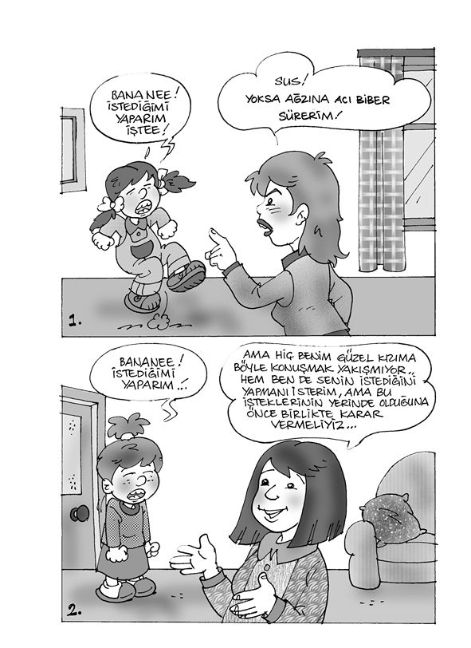
Anne ve babalarından öğütler dinlemiş olanlar, kendi çocuklarına da aynı şekilde öğüt vermeye ve onların problemlerini çözmede bu yöntemi kullanmaya eğilimlidirler. Akıldan çıkarılmaması gereken bir gerçek, güven ve sevgi dolu bir ortamda büyüyen çocukların, ileride sevecen ve güven veren anne babalar olacakları, buna karşılık, sorunları daima anne babaları tarafından çözülen çocuklarınsa, anne baba olduklarında, aynı şekilde davranacaklarıdır.
Yetişkinle çocuğun yetki mücadelesinden kaynaklanan problemlerin çözümü ya da çatışmalar genellikle iki şekilde ortaya çıkar:
1. Kazananlar: Otorite kuran ebeveyndir; “Anne babalar daima en iyisini bilir.” ilkesi egemendir. Bu yöntemde yetişkin kazanır.
2. Kaybedenler: Bu yöntemde kazanan çocuk, kaybeden anne babadır.
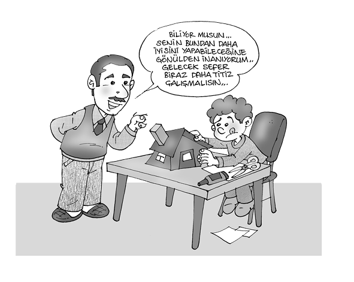
Her iki durumda da taraflardan biri yenilir ve öfkelenir. Oysa sorun, karşılıklı ilişkiden doğduğunda, o zaman karşılıklı problem çözme yoluna gidilir; bunun sonucunda, ne çocuğun, ne de yetişkinin kaybettiği bir durum ortaya çıkar.
2. Sağlıklı Bir iletişim İçin
Anne babaların çocuklarına korku silahını çevirmeksizin sorumlu, iş birliğine yatkın, kendi kendini disipline eden, yapıcı ve yaratıcı bireyler yetiştirebilmeleri, ancak onlarla kuracakları sağlıklı iletişim ortamına bağlıdır. Bu da anne babaların, susmayı öğrenip, çocuklarını dinlemeleri ile mümkündür.
Başka bir deyişle çocuklarla ilişki kurabilmenin en iyi yolu, önce çocuğu duymak, dinlemek ve ne dediğini anlamaya çalışmaktır. Dinleme, anne-baba-çocuk arasındaki anlaşmayı kolaylaştırır.
Çocuk soru sorarak öğrenir. Çocuklar 2-3 yaşlarından başlayarak yetişkinleri soru yağmuruna tutarlar. Bu sorulara cevap “Bilmiyorum.” olabilir. Önemli olan, soruları duymamızdır. Eğer dinlemiş, soruyu duymuşsanız bu, çocuğu dikkate aldığınızı, onu önemsediğinizi, aynı zamanda onun konuşmasını uygun gördüğünüzü belirtir. Bu da ilişkiyi kolaylaştırır. Demek ki çocuğu dinlemek, onu duyarak, ne demek istediğini anlamaya çalışmak demektir.
Oysa çoğunlukla anne ve baba, çocuklarıyla olan diyaloglarında şu tepki biçimlerini sergilerler:
Suçlama (Sen her zaman konuşursun zaten.)
Emir (Hemen yerine otur.)
Tercih etme (Aynı hareketi bir kez daha yaparsan okul bitince cezaya kalırsın.)
Eleştirme (Daha iyisini yapmalısın.)
Uyarma (Son kez hatırlatıyorum.)
Güven verme (Senin bunu daha iyi yapacağına inanıyorum.)
Utandırma (Şımarık çocuk.)
Sözlü anlatım (Birisini rahatsız etmek iyi bir davranış değildir.)
Yargılama (Kitaplar yazmak için değil, okumak içindir.)
Ancak tüm bu bastırıcı sözler,
Çocuğun kendisini suçlu hissetmesine neden olur,
Anne-babanın adil olmadığı düşüncesini geliştirir,
Çocuk, kendisinin sevilmediğini düşünür,
Sert tepkiyle yanıt vermesine yol açar,
Karşı çıkmasına neden olur,
Kendisini yetersiz hissedip öz saygısını yitirmesine yol açar.
Anne ve babalar, çocuklarının davranışlarının -büyük ölçüde- kendileriyle olan etkileşime bağlı olduğunu kabul etmeli ve insanlar arası ilişkiler hakkında bazı temel ilkeleri öğrenmelidirler.
Anne baba olmanın önde gelen özelliklerinden biri, bu kimselerin kararlı ve tutarlı olmaları gerektiğidir. Oysa uygulamada, çocukların bazı davranışlarını bazı günlerde anne babanın sakin olması nedeniyle kabul edilebildiği, buna karşılık benzeri davranışların başka günlerde yine anne babanın gerginliği nedeniyle kabul edilmediği görülmektedir.
Anne ve babalar, çocuklarının davranışlarının -büyük ölçüde- kendileriyle olan etkileşime bağlı olduğunu kabul etmeli ve insanlar arası ilişkiler hakkında bazı temel ilkeleri öğrenmelidirler.
Örneğin, ebeveynin dinlenmiş ve sakin olması hâlinde, 3 yaşındaki kızının piyano çalması ona ilginç gelebilir ve kabul edilebilirken, annenin yorgun ve uykusuz olması hâlinde aynı davranış, kabul edilmeyen davranış grubuna girer.
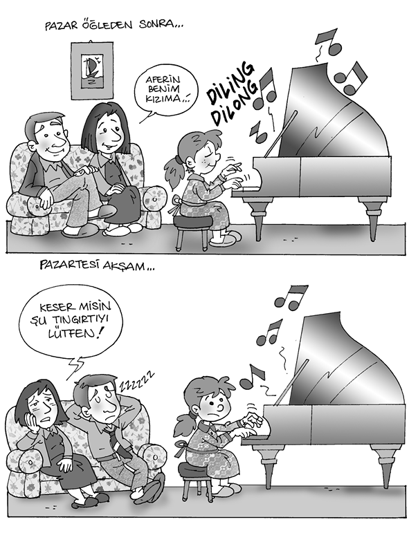
Anne babanın ruhsal durumu dışında, bir çocuğun bazı kişilik özellikleri ya da karakteristik özellikleri nedeniyle diğer çocuklardan daha fazla benimsenmesi, kabul edilen davranış miktarının artmasına sebep olabilir.
3. Aktif Dinleme
Anne baba ile çocuk arasında sıcak bir ilişkinin oluşması, Dr. Gordon’un aktif dinleme adını verdiği, “konuşan bireyin sözlerini açarak tekrar etmek” şeklinde uygulanan bir yöntemle mümkündür. Aşağıda çocuğuyla hatalı bir iletişim kuran anneyle, aynı konuda aktif dinleme yöntemi uygulayan anne örneği sergilenmiştir. Verilen örnekte, annenin iletişim hataları açıkça belli olmaktadır:
Çocuk: Ahmet bugün benimle hiç oynamadı.
Anne: Arkadaşlarınla iyi geçinmen gerektiğini öğrenmelisin.
Çocuk: Onunla oynamak istemiyorum! O aptalla iyi geçinmek de istemiyorum.
Anne: O zaman seninle oynayacak başka birini bul.
Çocuk: Beraber oynayabileceğim başka kimse yok.
Anne: Yorgunsun, yarın kendini daha iyi hissedersin ve bu olayı unutursun.
Çocuk: Yorgun değilim, yarın kendimi daha iyi hissetmeyeceğim, ondan nefret ediyorum!
Anne: Bir daha arkadaşların hakkında böyle konuşursan pişman olursun.
Aktif dinlemede ise aynı konuşma şöyle gelişmektedir:
Çocuk: Ahmet bugün benimle hiç oynamadı.
Anne: Ahmet’e kırılmış görünüyorsun.
Çocuk: Onunla hiçbir zaman oynamayacağım.
Anne: O kadar kızgınsın ki, onu bir daha görmek istemiyorsun.
Çocuk: Evet, ama onunla arkadaşlık etmezsem oyun oynayacak başka arkadaş bulamam.
Anne: Yalnız kalırsın.
Çocuk: Onunla geçinmek zorundayım, ama kızmamak elimde değil. Daha önce her dediğimi yaptığı için ona kızmıyordum, oysa şimdi ona emir veremiyorum.
Anne: Onu etkilemek artık pek kolay olmasa gerek.
Çocuk: Evet, artık o bir bebek değil.
Anne: Sen onu bu hâliyle daha çok seviyor olmalısın.
Çocuk: Evet, ama ona emir vermeye çok alıştığım için bu hâlini yadırgıyorum. Belki ara sıra onun dediklerini uygularsam daha az kavga ederiz, ne dersin?
Bu yöntem, çocukların sahip oldukları olumsuz duygulardan dolayı rahatsız olmalarını engeller, yetişkinle çocuk arasında sıcak bir ilişkinin kurulmasını sağlar. Ayrıca sorunların çözülmesini kolaylaştırır ve çocukların, anne babalarının düşüncelerine değer vermelerini sağlar.
Pasif dinlemeye (susma) karşılık aktif dinleme, çocukla karşılıklı ilişki kurmayı sağlar ve çocuğa, anne babasının kendisini anladığını hissettirir.
Ancak bu tür bir diyalog, çocuğun konuşmaya başladığı, iletişime hazır olduğu 2 yaş civarından itibaren başlatıldığı takdirde anlamlıdır. Aksi halde, çocukluk yıllarında kurulmayan iletişimin, gençlik yıllarında oluşturulması mümkün değildir.
Yukarıdaki açıklamalardan da anlaşılacağı gibi, çocuğun pek çok davranışının kökeninde, anne babanın izleri bulunmaktadır. Bu izler olumlu olduğu takdirde çocuğa yansıması da olumlu, aksi takdirde olumsuz olmaktadır. Çocuk, yaşamının ilk yıllarında dış dünyayı anne ve babasının gözlüğüyle görmeye başlar. Bu nedenle anne babanın dünya görüşü, değer yargıları ve inançları, çocuğa olduğu gibi yansır.
Çocuklarına sağlıklı bir model oluşturamayan anne ve babalar, çocuklarının karakter hamurlarının yanlış şekillenmesine zemin hazırlarlar.
O halde, anne ve babaların çocuklarına istenilen davranış ve alışkanlıkları kazandırabilmeleri; kendi kendini denetleyebilen, duygu ve düşüncelerini özgürce ifade edebilen, girişimci birer birey olmalarını sağlayabilmeleri, öncelikle onları tanımaları ve onlarla sağlıklı bir iletişim kurmalarıyla mümkündür.
4. Çocuğa Sorumluluk Duygusu Nasıl Kazandırılır?
Çocuğa kazandırılan pek çok alışkanlık gibi sorumluluk duygusu da daha bebeklik ve ilk çocukluk döneminden itibaren, örneklerle yaşatılarak öğretilir. Sorumluluğun kazandırılmasında aile içinde çocuğa karşı takınılan tavır, aile içi etkileşim ve özellikle ailedeki disiplin anlayışının özel bir rolü vardır.
Disiplin, çocuğa istenilen davranış ve alışkanlıkları öğretmek, -kendi kendini denetleme ya da iç denetim demek olan- ahlak gelişimini sağlamaktır. Bu da dıştan gelen bir zorlamayla olmaz. Önemli olan, içselleşmiş bir sorumluluk duygusunun oluşturulmasıdır.
Disiplin, bir anlamda, çocuğun sahip olduğu sorumluluklarıyla yaşantısındaki hareketlerinin doğal ve sosyal sonuçlarını kabul etmesidir.
Çocuk, iletişim kurulduğu andan itibaren kendi özgürlük sınırlarından haberdar edilmeli ve yemek yeme, tuvalet alışkanlığı, belirli saatte uyku uyuma gibi bazı temel alışkanlıkları ve kuralları okul öncesi dönemde benimsemelidir. Aşırı hoşgörü ve disiplin eksikliği, çocukta bencilliğe veya anti-sosyal davranışlara sebep olabilir. Aşırı otoriter ve baskılı katı disiplin de, anne babaya karşı korku ve öfke ile nefret duygularının geliştirilmesine, bağımlı bir bireyin ya da başkaldırıcı tutumlar içinde isyankâr bir bireyin oluşumuna sebep olabilir.
Sevgi temeline dayanmayan bir disiplin gerçekleşemez. Disiplin, sorumluluğu öğretmektir. Sorumluluk, öncelikle anne ve babanın sorumluluk bilinci içinde rollerini gereğince yapmalarıyla mümkün olur. Evdeki annelik görevini yeterince yapamayan, kendi sorumluluğunun bilincinde olamayan bir anne, çocuğundan sorumluluk bekleyemez. Kızına “Konken partisine gittiğimi babana söylemezsen kârımın 1/5’ini sana vereceğim.” diyen bir anne örneğinin bulunduğu aile ortamında, çocuktan sorumluluk duygusunu geliştirmesi beklenemez. Sorumluluk duygusunun oluşumunda, çocuğa verilen otonomi (kendi kendini yönetme) fırsatlarıyla, onu davranışlarının sonuçlarıyla baş başa bırakma yolunu seçme büyük önem taşır. Bunun için öncelikle çocuğa küçük yaştan itibaren yaşına, yeteneğine ve cinsiyetine uygun görevler vererek güven duygusunun pekiştirilmesine çalışılmalıdır. Örneğin kız çocuğuysa örgü örmek, yemek masası hazırlamak; erkek çocuğuysa elinin çekiç tuttuğu andan itibaren çivi çakmak gibi görevler vermek, ardından da başarısını sözlü olarak ödüllendirmek, bu alışkanlığın yerleşmesini sağlamak açısından büyük önem taşır. Çocuğa sorumluluk bilinci aşılarken öncelikle bazı kurallara uyması ve ilk temel alışkanlıkları kazanması gerekir. Söz gelimi, okul öncesi döneminde kendi başına yemeğini yemeye başlamayan, kendi yatağında uyuma alışkanlığı yerleşmeyen, dişlerini fırçalayıp oyuncaklarını toplamayı öğrenmeyen bir çocukta, okula başladığında verilen ödevi alıp evde yapma sorumluluğu kolay kolay gelişemez.
Çocuk, iletişim kurulduğu andan itibaren kendi özgürlük sınırlarından haberdar edilmeli ve yemek yeme, tuvalet alışkanlığı, belirli saatte uyku uyuma gibi bazı temel alışkanlıkları ve kuralları okul öncesi dönemde benimsemelidir.
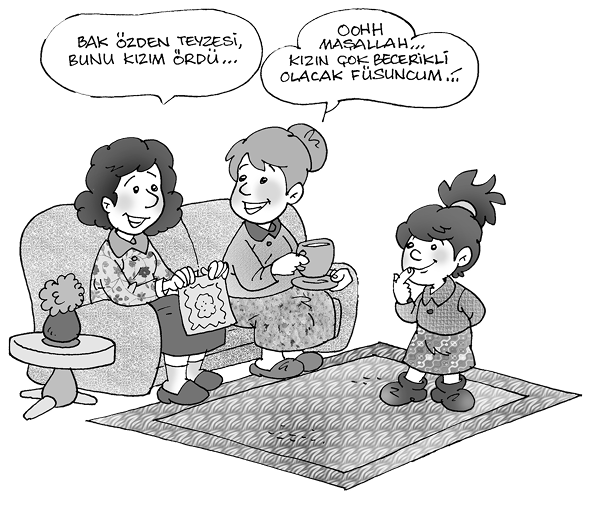
Olayların sonuçlarıyla baş başa bırakma, çocuğun kişilik gelişimine, otonom (kendi kendini yöneten) ve girişimci bir birey olmasına yardımcı olan bir yöntemdir. Bu yöntemle çocuk, olayların doğal sonuçlarından ders almasını öğrenir. Örneğin ev ödevini yapmayan çocuğa annesi zor kullanmak yerine, ertesi gün alacağı kötü not ya da öğretmenin tepkisiyle kendisinin baş başa kalmasını yeğleyecektir. Yine sabah geç kalkan çocuk, okula geç kalacak, böylelikle hareketinin cezasını kendisi çekmiş olacaktır.
Sorumluluğu öğretmede önemli olan, çocuğu, kendine özgü kişiliği olan, bağımsız bir birey olarak kabul etmek ve onun hak ve özgürlüklerinin sınırlarını dengeli bir biçimde belirleyebilmektir. Bu sınırlara uymayan çocuğa uygulanacak ceza, “insanlar arası ilişkileri anlatacak” türde olmalı, bedensel ceza, aşağılama, karanlık odaya kapatma gibi ceza türleri düşünülmemelidir. İnsanlar arası ilişkileri anlatacak türdeki ceza, ya çocuğun istediği bir şeyi almamak, gideceği bir programı iptal etmek gibi onun bir isteğini kısıtlamak şeklinde uygulanmalı ya da çayı döken çocuğa masayı temizletmek, ana caddede bisiklete binen çocuğa bisiklete binmeyi yasaklamak şeklinde, sebep-sonuç ilişkilerini anlatmayı esas almalıdır. Bu disiplin yönteminde çocuk, sorumluluğu öğrenir ve kendi davranışının sonunda ortaya çıkan zararın ne olduğunu görmeye çalışır. Bu da çocukta iç denetim mekanizmasının gelişmesine yardımcı olur. Bu disiplin yöntemini seçen anne ve baba, cezayı gecikmeden uygulamalı, suça eş değerde ve zararı giderici bir ceza türü seçmeli (dökülen çayın temizletilmesi gibi) ve uygulanamayacak cezayla çocuk tehdit edilmemelidir (“Bisiklete binemezsin!” diye tehdit etmek yerine, bisikleti alıp kaldırmak gibi). Disiplinde ceza kadar ödül de büyük önem taşır. Ödül, anne ve baba tarafından hak edildiğinde verilmeli, sadece görevini yapan çocuk, gereksiz şekilde ödüllendirilmemelidir. Yine sosyal ödül adı verilen güzel bir söz, bir öpücük, başkalarının yanında övme gibi ödüller gerektiğinde sıklıkla uygulanabilmeli, buna karşılık oyuncak, bisiklet, bilgisayar almak gibi maddi ödüllere çok nadir durumlarda başvurulmalıdır. Nihayet verilen söz tutulmalı ve ödül zaman kaybetmeden hemen uygulanmalıdır.
Sonuç olarak, okul öncesi döneminden başlayarak bazı temel alışkanlıkları kazanamayan, hak ve özgürlüklerinin sınırlarını ve sorumluluklarını öğrenemeyen çocuk, okul dönemindeki kurallarla karşılaştığında bocalar. Bu nedenle anne babaların, çocuklarına korku silahını çevirmeksizin, onları kendi kendilerini disipline eden birer birey olarak yetiştirebilmeleri gerekir. Ancak bu yaklaşım sayesinde, kendi kendisini denetleyebilen, sorumluluk sahibi ve öz güveni olan bireyler yetişebilir.
5. Aile İçi Ortamını Etkileyen Faktörler
Çağdaş psikoloji bilimi, çocuğun doğumundan başlayarak anne ve babasına olan ihtiyacı üzerinde durmakta ve beslenme kadar “duygusal besi”nin önemini vurgulamaktadır. Bu “duygusal besi”yi verebilmesi için anne ve babanın önce çocuğu istemesi, onun varlığını kabul etmesi gerekir. Bu besinin çocuk tarafından alınışı, gelişim aşamalarına uygun olarak farklılık gösterebilir.
Başlangıçta annenin fizik temasıyla, ten kokusuyla bu ihtiyacını karşılayan çocuk, zaman içinde onunla oyun oynayarak, konuşarak aynı ihtiyacını karşılar. Baba, çocuğun gerek sosyalleşmesi, gerekse tüm gelişimi açısından büyük önem taşır. Babanın yokluğu bir anlamda çocuğun kendine güvenini yitirmesine ve buna bağlı olarak çeşitli uyum ve davranış bozukluklarına sebep olabilmektedir.
Baba-çocuk ilişkisini konu alan araştırmalar, babanın çocuğuyla yoğun beraberliğinin çocuğun bilişsel gelişimiyle okul başarısında olumlu bir etken olduğunu ortaya koymaktadır. Baba-çocuk arasındaki iletişimin yetersizliği, özellikle erkek çocuklarda annenin özdeşim modeli olarak alınmasına, dolayısıyla cinsel kimlik sapmalarına bile neden olabilir.
Hamilelik sırasında anneliğe başarılı bir biçimde uyum sağlayabilme, doğum sancısı çekerken ve doğum sırasındaki acıların az hissedilmesi bile, eşlerin birbirlerine duyarlı tepkileri ve destekleriyle yakından ilgilidir. Eğer yaşamın tüm sorumlulukları, ilgili bir eşle paylaşılırsa, kirli bezler, gece yarısı süt vermeler, hasta bir çocuğun ağlamaları daha dayanılır olur. Çocuğun ilk söylediği sözlerle attığı ilk adımlar aileye daha keyif verir.
Erişkinler arasında en az doyumlu ve en büyük ruhsal çöküntü içinde olanlar, çoğunlukla küçük çocukları olan ve çalışmayan annelerdir. Bu doyumsuzluk, büyük ölçüde bakıcılık rolünün annelere getirdiği görev yükünün ağırlığından, kısıtlamalardan ve sürekli isteklerle karşılaşmaktan kaynaklanabilir. Bu da anne-çocuk etkileşimine olumsuz açıdan yansır. Bu tür gerilimler eşin desteği ve takdirleriyle azaltılabilir. Eşlerin annelere destekleyici bir tutum içinde olduğu durumlarda anne-çocuk yakınlığının çok iyi olduğu, bu ilişkinin duyarlı ve şefkat dolu olduğu görülmüştür.
Anne ve babanın varlıkları kadar çocuklarına sağlıklı birer örnek olmaları da önemlidir. Çünkü kişiliğin gelişimi ve karakterin oluşumundaki temel özdeşim modelleri onlardır.
Önemli olan bir diğer nokta da, anne babanın sözlerinden çok eylemleriyle başarılı birer model oluşturmaları ve çocuklarında benlik saygısı oluşturacak etkileşim ortamını hazırlamalarıdır.
Yani anne ve babanın çocuğuna sözleriyle “Yalan söylemek doğru değildir.” demesinden çok, bunu davranışlarıyla gerçekleştirmesi önemlidir. Bireyin kendini onaylaması ya da kendinden memnun olması demek olan benlik saygısının yüksek olması için, çocuğun içinde bulunduğu aile; öz güvenli, aralarında ve çocukla iyi iletişim kuran, çocuklarına karşı güven verici, hoşgörülü ve esnek bir yaklaşım içinde olan bireylerden oluşmalıdır. Aile üyelerinin, çocuktaki iç denetim mekanizmasını geliştirememeleri, aşırı baskılı ve otoriter yaklaşım içinde olmaları, benlik saygısını azaltan, hatta yok eden olumsuz yakın çevre faktörleridir. Çünkü benlik saygısı, çocuğun fikirlerine değer verilen, sözleri dinlenen, anne babasından destek gören, başka bir deyişle, insan olarak kendisine değer verilen bir ortamda filizlenir ve gelişir.
Çağdaş psikoloji bilimi, çocuğun doğumundan başlayarak anne ve babasına olan ihtiyacı üzerinde durmakta ve beslenme kadar “duygusal besi”nin önemini vurgulamaktadır. Bu “duygusal besi”yi verebilmesi için anne ve babanın önce çocuğu istemesi, onun varlığını kabul etmesi gerekir.
Anne babalar, çocukların davranışlarının büyük ölçüde kendileriyle olan etkileşime bağlı olduğunu kabul etmeli ve insanlar arası ilişkiler hakkında bazı temel ilkeleri öğrenmelidirler.
Anne baba olmanın önde gelen özelliklerinden biri, kararlı ve tutarlı olmak gerekliliğidir.
Anne baba çocuk ilişkisi, temelde anne ve babanın tutumlarına bağlıdır. Çocuklar arasında uyum bozukluğuna neden olan birçok vakaya, yeterli ve uygun olmayan anne-baba-çocuk ilişkilerinin sebep olduğu saptanmıştır.
Anne babanın tavırlarını oluşturan nedenler incelendiğinde, tüm vaziyet alışlarda olduğu gibi, anne babaların çocuklarına karşı takındıkları tavrın da bir öğrenme ürünü olduğu görülür.
Anne ve babaların çocuklarına karşı tavırlarını etkileyen başlıca faktörler arasında, anne babanın beklentilerine uygun çocuğa sahip olup olmamaları, çocuklarının sayı, cinsiyet ve karakteristik özelliklerinden memnun olup olmamaları sayılabilir.
Bütün bunların dışında anne ve babanın çocukluk yıllarındaki kendi anne babalarıyla olan deneyimleri, şimdiki tutumlarında etkili olabilmektedir. Ayrıca karı kocanın kendi aralarında iletişimlerinin sağlıklı olup olmaması, çocuklarına yöneltecekleri tutumlarını etkileyen önemli bir diğer etkendir.
Çocukların evlilik ilişkisi üzerinde etkilerinin de aile sistemi içinde ele alınması gerekir. Anne baba arasındaki ilişki, onların çocuklarına olan tutumlarını etkilerken, çocuk da evlilik ilişkisini etkilemektedir.
Hamilelik ve özellikle ilk çocuğun doğuşu, aile içi rollerde daha geleneksel türde bir iş bölümüne doğru kayma getirir. Çocuğun doğmasından önce ailedeki ilk iş bölümünün geleneksel mi yoksa eşitlikçi mi olduğuna hiç bakmaksızın, bu kayma daha çok kalıplaşmış erkek ve kadın rollerine doğru olur.
Büyüme aşamalarında başarılı olan çocuklar, sağlıklı aile ilişkileri içinde yetişmiş kimselerdir. Aile içinde gerçekleşen başarılı ilişkiler, mutlu, arkadaşça, bunalımdan uzak ve yapıcı bireylerin oluşumunu sağlar. Bunun tersine, uyum bozukluğu gösteren çocuklar, genellikle başarısız bir anne-baba-çocuk ilişkisinin ürünüdürler. Anne ve babanın sevgisi ve ilgisinden yoksun olarak büyüyen çocuklar, büyük bir sevgi açlığı gösterirler. Bu açlık da birtakım davranış bozukluklarına neden olabilir.
Nadir durumlarda baba, karısı ve yeni doğan bebekle olabilmek için işinden izin alsa da bu süre 1-2 haftayı pek geçmez; anne babanın ikisinin de çalıştığı evlerde bile çoğu zaman işini bırakan anne olur.
Huysuz, davranış bozukluğu gösteren ya da engelli çocuklar, anne babaya ek gerilimler yüklerler. Bu gerilim de evliliğe çatışmalar biçiminde yansır. Çok şey isteyen kötü huylu bir çocuğun varlığı, zaten zayıflayan bir evliliğin parçalanmasını hızlandırır.
Büyüme aşamalarında başarılı olan çocuklar, sağlıklı aile ilişkileri içinde yetişmiş kimselerdir. Aile içinde gerçekleşen başarılı ilişkiler, mutlu, arkadaşça, bunalımdan uzak ve yapıcı bireylerin oluşumunu sağlar. Bunun tersine, uyum bozukluğu gösteren çocuklar, genellikle başarısız bir anne-baba-çocuk ilişkisinin ürünüdürler. Anne ve babanın sevgisi ve ilgisinden yoksun olarak büyüyen çocuklar, büyük bir sevgi açlığı gösterirler. Bu açlık da birtakım davranış bozukluklarına neden olabilir.
6. Yaygın Anne Baba Tutumları
Anne baba tutumlarının en belirgin iki özelliği, “duygusal ilişki boyutu” ile “denetim boyutu”dur. Duygusal ilişki boyutu incelendiğinde, bu boyutun çocuğu merkez alan kabul edici tutumdan, reddedici tutuma kadar uzanan bir yelpaze içinde farklılaştığı görülür. Aynı şekilde “denetim boyutu” da kısıtlayıcı tutumdan hoşgörülü tutuma kadar geniş bir alanı kapsar.
Çocuk, sıcak bir etkileşim ortamında anne babanın sevgisini kaybetmekten korkar; onların onayını alma konusunda isteklidir. Bu nedenle de onu, sağlıklı bir etkileşim ortamında, uygun olan davranış kalıpları doğrultusunda yönlendirirken sert disiplin kurallarına başvurmaya gerek yoktur.
Çocuk, sevgi ve ilgi ortamında anne babanın standartlarına uymak için çaba sarf eder. Böyle bir ortamda anne babanın çocuğa sık sık akıl yolunu göstererek açıklamada bulunması, onun toplumsal kuralları içselleştirmesine ve hangi davranışın uygun, hangisinin uygun olmadığını fark etmesine yardımcı olur.
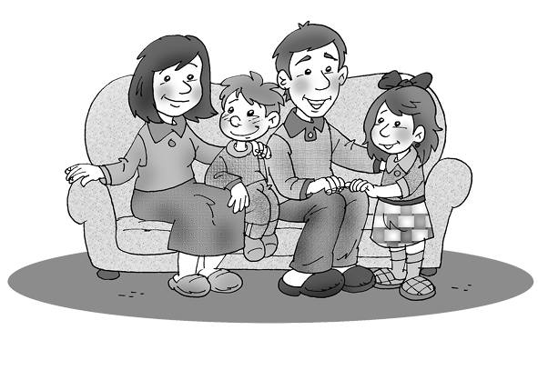
Sevgi ile besleme, çocuğun gereksinmelerine karşı duyarlı olmayla eş anlamda yorumlanır. Anne babanın sevgisi çocukta, güvenlik, düşük kaygı düzeyi ve yüksek benlik saygısı yaratır. Sevgisiz ya da bedensel cezanın uygulandığı aile ortamlarındaysa yüksek kaygı düzeyi ve gerilim ön plandadır. Cezalandırıcı ailenin yarattığı yüksek gerginlik durumu, çocuğun “toplumsallaşma oyununun” kurallarını öğrenmesini zorlaştırabilir ya da engelleyebilir.
Sıcak, sevgi dolu aile ortamlarındaki anne babalar, ilgisiz ve sevgisiz aile ortamındaki anne babalara oranla çocuklarının davranışlarını, özellikle saldırgan davranışlarını denetlemelerine daha çok yardımcı olurlar.
Saldırganlığı denetlemek için dayak gibi şiddet uygulama yöntemlerine başvuran anne babalarsa, çocuğu hem hayal kırıklığına uğratarak daha büyük öfke nöbetlerine yol açarlar, hem de ona bir saldırganlık modeli göstermiş olurlar.
Bedensel cezanın uygulandığı çocuk, kendisini eleştiren ve döven ebeveynine karşı evde hemen hiç saldırganlık tepkisinde bulunmaz, ancak, saldırganlığını misilleme tehlikesi daha az olan ev dışındaki arkadaş ve okul ortamlarına taşır.
Çocukların toplumsal ve zihinsel açıdan yetkin bireyler olması isteniyorsa bir ölçüde anne baba denetimi gereklidir. Unutulmamalıdır ki, toplumsallaştırmanın asıl amacı, dış öğeler tarafından yönetilmek yerine kendi kendine yönetimi sağlamaktır. Anne babanın aşırı kısıtlayıcılığı kadar aşırı serbestliği de toplumsal gelişimi engeller.
Anne baba davranışlarıyla, çocukların davranışları arasındaki ilişkileri konu alan araştırmalara göre baskıcı olmayan, esnek ve hoşgörülü anne babalar, çocuklarda olumlu duygusal, toplumsal ve bilişsel gelişmeye yol açmaktadırlar.
Bu anne babalar engelleyici davranmamakta, çocuklarına makul sınırlar içinde özgürlük tanımaktadırlar. Bütün bunlar çocuğun kaygı ve engelleme olmadan çevresini keşfetmesini, kişiler arası ilişkilerde yetkinliğe erişmesini sağlar. Genellikle sevgi, ılımlı bir kısıtlayıcılık, benlik saygısı, kendini uyarlayabilme, yetkinlik ve içselleştirilmiş bir denetime yol açar.
Bunun tersine baskıcı anne babalar; katı, kuvvet uygulayıcı ve çocukların gereksinmelerine karşı duyarsız kişilerdir. Bu gibi ailelerde çocuk çevresini hemen hemen hiç denetleyemez ve çevreden çok az doyum alır. Kendisini kapana kısılmış ve öfke dolu hisseder. Bu sevgisiz ortamda isteklerini dile getirememesi çocukta mutsuzluğa, iç çatışmalı ve sinirli davranışlara yol açar. Aşırı gevşek ve tutarsız bir disiplin uygulayan anne babalar da çocukların dürtülerini rahatça dışa dökmelerine izin verdiklerinden, çocuklarda denetimsiz davranışların oluşumuna sebep olurlar.
Bedensel cezanın uygulandığı çocuk, kendisini eleştiren ve döven ebeveynine karşı evde hemen hiç saldırganlık tepkisinde bulunmaz, ancak saldırganlığını, misilleme tehlikesi daha az olan ev dışındaki arkadaş ve okul ortamlarına taşır.
Anne babanın çocuklarına karşı takındıkları tutumları şu başlıklarda gruplandırabiliriz:
Aşırı koruma: Anne babanın aşırı koruması, çocuğa gerektiğinden fazla kontrol ve özen göstermesi anlamına gelir. Bunun sonucu, çocuk, diğer kimselere aşırı bağımlı, kendine güveni olmayan, duygusal kırıklıkları olan bir kişi olabilir. Çocuğun yaşamı boyunca sürebilen bu bağımlılık, psiko-sosyal olgunluğu olumsuz açıdan etkiler ve çocuğun kendi kendisine yetmesine olanak vermez.
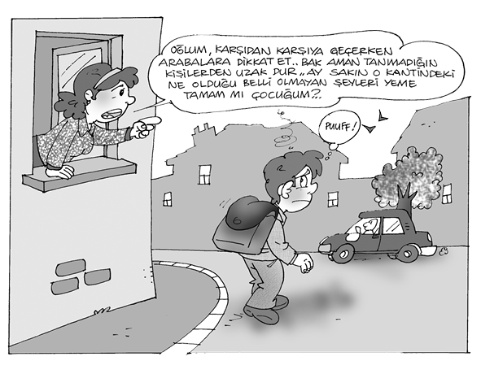
Anne babanın aşırı koruyuculuğu, çocuğun okul başarısını ve okula uyumunu da etkiler.
C. ilkokul 1. sınıfta, sınıf başkanlığı yapan en başarılı öğrencidir. Annesinin, hasta olur endişesiyle teneffüslere çıkmasını istememesi sebebiyle giderek okuldan soğumuştur ve kendisinde okul fobisi oluşmuştur. Kendisi durumu şöyle açıklamaktadır: “Bütün arkadaşlarım bahçede oynarken ben sınıfta bekçilik yapıyorum, bu nedenle artık okula gitmek istemiyorum.”
Hoşgörü sahibi olmak: Anne babanın çocuklarına karşı hoşgörü sahibi olmaları, çocukların bazı kısıtlamalar dışında, arzularını diledikleri biçimde gerçekleştirmelerine izin vermeleri anlamına gelir. Anne babanın hoşgörüsünün normal bir düzeyde gerçekleşmesi, çocuğun kendine güvenen, yaratıcı, toplumsal bir birey olmasına yardım eder.
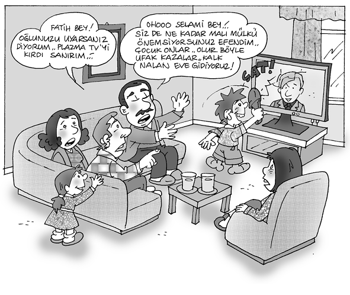
Aşırı hoşgörü ve düşkünlük: Aşırı hoşgörü ve düşkünlük, çocuğu bencil yapar. O, daima diğerlerinin dikkatini çekmeyi ve kendisine hizmet edilmesini ister. Böyle çocuklar, ev içinde ve dışında çok zayıf bir sosyal uyum gösterirler.
Reddetme: Reddetme, bir anlamda, çocuğun sağlık hizmetlerini aksatarak, ona karşı düşmanca duygular beslemek şeklinde tanımlanabilir. Bu ortamdaki çocuk, yardım duygusundan uzak, sinirli, duygusal kırıklıkları olan, diğerlerine, özellikle kendisinden küçük ve zayıflara karşı, düşmanca duygulara sahip bir birey olabilir.
Baskı altında bulundurma: Anne ve babadan biri ya da her ikisinin baskısı altında olan çocuk, nazik, dürüst ve dikkatli olmasına karşılık, çekingen, başkalarının etkisinde kolay kalabilen, aşırı hassas bir yapıya sahip olabilir.
Suçlayan, cezalandıran ve sürekli karışan anne babaların çocuklarının kolayca ağlayan çocuklar olduğu görülür. Baskı altında büyüyen çocuklarda, genellikle, isyankâr tutumlarla birlikte, aşağılık duygusu gelişebilir.
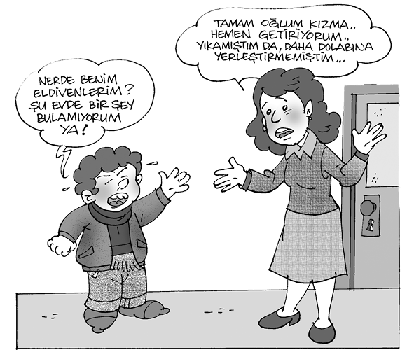
Çocuklara boyun eğme: Çocuklarına boyun eğen anne ve babalar, evde onların egemenliğini kabullenen kişilerdir. Bu tür ailelerde, çocuklar anne ve babalarına hükmeder ve onlara çok az saygı gösterirler. Bu çocuklar yalnız anne ve babalarıyla yetinmeyip, zamanla ev dışındaki kimselere de egemen olmanın yollarını arayan birer birey hâline dönüşürler.
Çocuk ayırma: Bütün çocuklarını eşit düzeyde sevdiklerini söylemelerine karşın, bir kısım anne ve babanın, bazı çocuklarını daha çok sevdikleri gözlenmektedir. Böyle durumlarda anne ve babalar, sevdikleri çocukları diğerlerinden ayırarak onları kayırırlar. Aşırı sevgi gören bu çocuklar, daha çok anne ve babalarıyla oyun oynamayı yeğlerken, akranlarıyla olan ilişkilerinde saldırgan ve baskılı bir görünüm içindedirler.
7. Başarılı Anne-Baba-Çocuk
İlişkisinin Koşulları
Anne baba, çocuklarını eğitirken öncelikle gelişim evrelerini bilmeli ve çocuklarının içinde bulunduğu gelişim dönemini tanımalıdır. Başka bir deyişle, anne baba, çocuklarını tanıyarak işe başlamalıdır.
Anne baba, öncelikle çocuğunu bağımsız bir birey olarak kabul eden, ona sevgi ile yaklaşan ve olumlu ilişki kurmaya çalışan kişiler olmalıdır. Bilinmelidir ki, sevgi temeline dayanan eğitim, sağlam ve başarılı bir eğitimdir.
Anne-baba, çocuklarının kendi modelleri olmadığı gibi, kardeşlerinden ve arkadaşlarından farklı, bağımsız, kendine özgü zekâ ve kişilik özellikleri olan bir birey olduğu gerçeğinden hareket etmelidir.
Anne ve babanın çocuklarına, “uygun olan davranışı” öğretebilmeleri ya da neyin doğru neyin yanlış olduğunu öğretebilmeleri için, gerek kendi aralarında gerekse çocuklarına yönelttikleri davranışlarında dengeli, tutarlı ve kararlı olmaları gerekir.
Anne ve babanın güvenli bir çocuğa sahip olabilmeleri için, önce kendilerine, sonra birbirlerine, ardından da çocuklarına güvenmeleri gerekir.
Çocuğun, taklit yoluyla her türlü davranış kalıbını öğrenmesi söz konusu olduğundan, anne baba “istenen-uygun davranış” örüntülerini geliştirmelidir. Anne baba, önce kendi içlerinde barışık, huzurlu birer birey ve sağlıklı birer özdeşim modeli olmalıdırlar.
Anne baba, çocuğundan yaşı ve yeteneklerine uygun isteklerde bulunmalı, çocuğu hayal kırıklığına uğratacak, yaşının üstünde beklentiler içine girmemelidir. Çocuğun ilgi ve yeteneği, onun yönlendirilmesinde esas alınmalı, anne babanın tutkuları dikkate alınmamalıdır.
Anne baba, öncelikle çocuğunu bağımsız bir birey olarak kabul eden, ona sevgi ile yaklaşan ve olumlu ilişki kurmaya çalışan kişiler olmalıdır. Bilinmelidir ki, sevgi temeline dayanan eğitim, sağlam ve başarılı bir eğitimdir.
Anne ve baba, soyut düzeyde uyan yerine, somut düzeyde eylemi temel almalıdır.
Anne ve baba öyle bir ortam hazırlamalıdır ki, çocuk her zaman anne ve babası yanındaymış gibi kendini güvenli, hiç yanında değilmiş gibi özgür hissetsin.
Anne baba, çocuğunun kişiliğine saygı duyan, benlik saygısı üstün kişiler olmalıdır ki, çocuklarının benlik saygısı da üstün olabilsin. Anne babalar, otonom (kendi kendini yöneten) bireyler yetiştirebilmek için gerekli psiko-sosyal ortamı hazırlamalıdırlar. Bunun için de, aşırı koruyucu yaklaşımdan kaçınarak, çocuğun kendi kendini yöneten bir birey olmasına fırsat vermelidir.
Kısacası, anne ve baba, çocuğa sevgi veren, girişim yeteneğini ve öz güvenini kazanabilmesi için onu destekleyen kişiler olmalıdır. Çocuğa yeterli düzeyde desteğin sağlandığı bu ortamda, anne babanın sağladığı disiplin ve eğitimin nitelikleri olumludur. Çocuğun istemi hiçbir zaman engellenmez. Aşırı davranışları anlayışla karşılanır ve yumuşak bir biçimde düzeltilir. Böyle esnek bir ortamda çocuk, cesaretli ve topluma uyumlu bir insan olarak yetişir. Yaşamını yapıcı çabalar üzerinde kurmayı öğrenir.
İdeal anne babayı belirlemek zor olmakla beraber, başarılı anne babalar çocuğun ihtiyaçlarını sezen, onlara uygun yanıtlar veren, aşırı hoşgörülü veya katı olmayıp çocuğa karşı esnek bir yaklaşım içinde olan, davranışlarında belirli bir devamlılık ve kararlılık sağlayan, karşı çıkmadan önce her zaman çocuğun isteklerini dinleyen anne babalardır.
Başarılı anne babalar, çocuğun kendi kendisini denetlemesi ya da iç denetim demek olan ahlak gelişimine ortam hazırlayan, çocuktaki sorumluluk duygusunu geliştiren, olayların sonuçlarıyla onları baş başa bırakan, onlara hak ve özgürlüklerinin sınırını öğreten, çocuklarına korku silahını çevirmeksizin, kendi kendilerini disipline eden ve düşüncelerini özgürce anlatabilen birer birey olarak yetişmelerine imkân hazırlayan kimselerdir.
KÜLTÜR VE GENÇLİK SORUNLARI
Prof. Dr. Özcan Köknel
KÜLTÜR VE GENÇLİK SORUNLARI
1. Gençlik Çağının Özellikleri
Bedensel, ruhsal ve toplumsal değişme ve gelişme süreçlerinin yaşandığı gençlik çağını kapsayan yaş dilimleri, ülkeden ülkeye, yayından yayına farklıdır. UNESCO, gençlik çağı olarak 12-24 yaş dilimlerini kabul etmiştir.
Çocukluk ye gençlik çağı; bedensel ve ruhsal özellikleriyle, bilgi, deney ve yaşantı birikimiyle, insan yaşamının gelecek erişkinlik, olgunluk çağlarını etkiler. Gençlik çağı, bedensel değişme ve gelişmeyle başlar. Bunu ruhsal ve toplumsal değişme ve gelişme izler.
Gençlik çağı;
Önerinlik (buluğ öncesi) (pre-puberty),
Erinlik (buluğ) (puberty),
Ergenlik (kemal, rüşt) (adolesence),
Önerişkinlik (olgunluk öncesi) (pre-adult) dönemlerini içerir. Birbirinden kesin belirtiler, ölçütler, sınırlarla ayrılamayan bu dönemler sonunda genç, erişkinlik çağına (olgunluk) (adult) ulaşır.
a) Gencin Kendini Beğenmesi-Beğenmemesi
Gencin kendine özgü olarak oluşturduğu çirkinlik ve güzellik kavramı, kaygıyla sevinç arasında gidip gelen duyguları yaratır. Gençlik çağında çirkinlik ve güzellik kavramlarının oluşmasında, çocukluk çağı yaşantıları ve ailenin tutumu önemli rol oynar.
Çocuğun kendini ve başkalarını tanıdığı yaşlarda çirkin-güzel ayrımı başlar. Bedenini, elini, kolunu, gözünü, saçını, yüzünü tanımaya başlayan çocuk, anne babasının ve çevrenin bunlara ilişkin olarak yaptıkları çirkin ya da güzel değerlendirmesiyle, bedenine ilişkin çirkin ve güzel kavramlarını benimser.
Gözü için güzel, saçı için çirkin denilen çocuk, bu değerlendirmeyi yaşam boyu saklar. Saçı söz konusu olduğunda çirkin olduğunu anımsar. Ayrıca çocuğun gözünün, yüzünün, saçının başka çocuklarla karşılaştırılması da bu kavramların benimsenmesinde etken olur. Siyah gözleri, kumral saçları olan bir çocuğu, mavi gözleri, sarı saçları olan bir çocukla karşılaştırıp, bunlardan birinin güzel, ötekinin çirkin olduğunu belirtmek, çocukta gözüne ve saçına ilişkin değerleri oluşturur.
Çocuğun güzel ve çirkin olarak yaptığı değerlendirmelerin gençlik çağında değişmesi, onda bu kavramlarla ilişkili, türlü duygulanım durumlarının ortaya çıkmasına yol açar. Genci, bedensel görünüşüne ilişkin iletilere aşırı duyarlı yapar. Kendiyle ilgili olan ya da genç tarafından kendisiyle ilgili olduğu biçimde yorumlanan bir bakış, mimik, jest ya da bir iki sözcük, genci alabildiğine kaygılı, tedirgin ya da neşeli, mutlu yapabilir. Başkalarından gelen bu iletilerin yorumu çoğunlukla gencin günlük, hatta anlık duygulanım durumuyla bağlantılıdır. Genç kendini çirkin olarak görüp değerlendiriyorsa, bütün bakışların, mimik ve jestlerin dolaylı olarak çirkinliğine ilişkin iletiler taşıdığını sanır. Sözcükleri bu doğrultuda yorumlar. Genç kendini güzel olarak görüp değerlendiriyorsa, bütün bakışların bu güzelliği görmek için kendi üzerinde toplandığını, başkalarının ona hayran olduğunu, bu hayranlığı türlü mimik, jest ve sözcüklerle açık ya da dolaylı olarak anlattıklarını tasarlar.
Gencin kendine özgü olarak oluşturduğu çirkinlik ve güzellik kavramı, kaygıyla sevinç arasında gidip gelen duyguları yaratır. Gençlik çağında çirkinlik ve güzellik kavramlarının oluşmasında, çocukluk çağı yaşantıları ve ailenin tutumu önemli rol oynar.
b) Bedene İlişkin Kaygılar ve Aşırı Duyarlılık
Ayna karşısında saatlerce makyaj yapan, giyinip süslenen genç kız ya da saçını tarayan delikanlı, hep başkalarının olası beğeni ve övgü ya da kötüleme ve yergisini düşünür. Kimi gencin ayna karşısında harcadığı zaman, gencin kendi görünüşüyle kurduğu çirkinlik ya da güzellik değerlerinden kaynaklanan iletişimi saatlerce sürer. Gençlik çağında ortaya çıkan bu durum, şizofrenin başlangıcında görülen ve ayna belirtisi (signe de miroire) adını alan bir saplantıya dönüşüp, gencin kendine dönük özsever (narsist) benliğiyle iletişim kurup çevreden uzaklaşmasına, kendi içine kapanmasına yol açabilir.
Değişik kesimlerden, farklı ekonomik ve toplumsal düzeylerden gelen kız ve erkek öğrenciler üzerinde yaptığımız anket araştırmaları, gözlem ve konuşmalar, bunların %30’unun bedensel değişme ve gelişmeden kaynaklanan birtakım sorunları olduğunu ortaya koymuştur. Bu sorunlar sıklık sırasına göre, aşırı duyarlılık ve coşku, utangaçlık, çevreden uzaklaşma, sorumluluktan kaçma, bilişsel süreçlerde azalma, girişim yetersizliği ve ilgisizlik olarak sıralanabilir.

18 yaşında, yüksek öğrenimde öğrenciliğini sürdüren genç erkek, boyunun 187 santim olmasını sorun yapmış, kısaltma olanağı bulabilmek için hekimleri dolaşmaya başlamıştı. Genç, durumunu şöyle anlatıyordu:
“Nereye gitsem bütün gözler bana bakıyor. Herkes benimle ilgileniyor. Boyumun uzun olması bütün dikkatleri üzerimde topluyor. Bu durumdan sıkılıyorum, utanıyorum. Rahatça dolaşıp gezemiyorum. Arkadaşlarım ‘sırık’, ‘Yukarıda havalar nasıl?’, ‘kavak’ diye takılıyor. İyi basketbol oynuyorum. Uzun boylu olmam orada işe yarıyor. Ancak başarısız olursam “Sırık dışarı!” diye bağırıyorlar. Boyumun on santim kısa olması için her türlü ilaca, ameliyata razı oldum. Çare yok. Ben de boynumu gövdeme çekerek, dizlerimi bükerek kısa görünmeye çalışıyorum.”
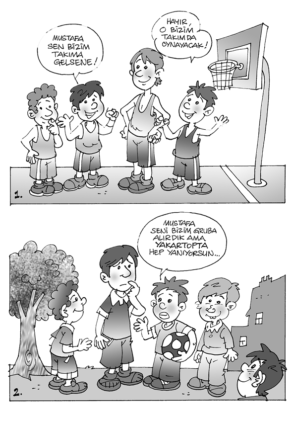
c) Çabucak Değişen Duygu ve Coşkular
Gençlik çağının kendine özgü, abartılmış, aşırı, çabuk ve kolay değişen duygulanım durumları vardır. Genç, bir anda kaygıdan mutluluğa, sevinçten sıkıntıya, kızgınlıktan sevecenliğe geçiverir. Başkasının tatlı ve yumuşak bakışı, gülümsemesi, bir iki övgü sözcüğü onu mutlu eder. Asık bir yüz, sert mimik ya da jest, örseleyici bir iki sözcük onu kaygının, kızgınlığın, umutsuzluğun derinliklerine sürükler. İlgi ve sevgiyle iletişim kurduğu insanlara karşı kısa bir süre sonra kin ve nefret duyar. Kızıp öfkelendiğini beğenip yüceltir. Çekinip korktuğuna sokulup yaklaşır.
Gençlik çağına özgü duygulanım ve coşkular, algı, dikkat, bellek, düşünme, mantık gibi bilişsel işlevleri de olumsuz yönde etkiler. Başarı, çalışma, yaratıcılık, verim düşer. Bilişsel alandaki bu olumsuz değişme, erinlik ve onu izleyen bir iki yıl içinde görülen okul başarısızlığı ve kazaların nedeni olarak kabul edilmiştir. Çalışması bozulan, başarısı azalan gencin evde ailesi, okulda öğretmeni ve arkadaşlarıyla süregelen iletişimi de olumsuz etkilenir. Çağına özgü duygulanım ve bilişsel özellikleri dikkate almadan gence yapılan “çalış” önerileri, gençte kaygı ve kızgınlık yaratır. Çalışma ve başarının daha çok düşmesine yol açar.
Gençlik çağındaki duygulanım ve bilişsel değişikliklerin belirli bir şiddeti ve süreyi aşması, normal sınırların dışına taşması, sürekli kaygı, sıkıntı, ilgisizlik, durgunluk, içe kapanma, aşırı coşku, kızgınlık, öfke gibi belirtilerle ortaya çıkan ruhsal bozuklukların ya da bir ruh hastalığının başlangıcı da olabilir.
Gençlik çağına özgü duygulanım ve coşkular, algı, dikkat, bellek, düşünme, mantık gibi bilişsel işlevleri olumsuz yönde etkiler. Başarı, çalışma, yaratıcılık, verim düşer.
Özetle, gençlik çağında gencin karşılaştığı, ilgi alanı içinde yer alan sorunların başında, duygu durumunun denetimi; kendi beden yapısıyla ilgili olarak zihninde yarattığı tasarıma verdiği değer, karşı cinsle ilişkiler ve aile bireyleriyle iletişim biçimi yer alır. Bu sorunların çözümsüz kalması, gencin bu sorunları aşacak beceriyi, yetiyi, yeteneği gösterememesi, ailenin sağlıksız iletişim biçimi, gençlik çağında zorluklara yol açar.
d) Kişilik Katmanları
Kişilik, değişik bedensel, ruhsal ve toplumsal katmanlardan oluşur. Bu katmanlarda yer alan yapılar ve bu yapıların işlevleri, günümüzde geçerli olan bilimsel yöntemlerin ışığı altında görülür, değerlendirilir ve ölçülebilir. Bu nedenle kişiliği oluşturan nesnel katmanlar olarak kabul edilebilir. Bunlar şu şekilde özetlenebilir:
Kalıtımla, soya çekimle aktarılan bedensel, ruhsal özellikler, yatkınlıklar,
Merkezî sinir sisteminin yapısı ve işlevi,
Ruhsal yapının temelini oluşturan, kişiliğin gelişmesinde ve oluşmasında önemli rolü ve yeri olan zekâ düzeyi,
Gençlik çağında karşılaşılan, sorunların başında duygu durumunun denetimi; kendi beden yapısıyla ilgili olarak zihninde yarattığı tasarıma verdiği değer, karşı cinsle ilişkiler ve aile bireyleriyle iletişim biçimi yer alır.
Benlik (ego) gelişmesi,
Çocuğun, gencin, içinde yaşadığı, büyüdüğü, geliştiği doğal ortam, aile çevresi, yakın ve uzak toplumsal ortam,
Çocuğun, gencin, insanın hâlen içinde yaşadığı, iletişim ve etkileşimde bulunduğu toplum ortamı,
Çocuğun, gencin, insanın hâlen içinde yaşadığı toplumsal ortamda bulunduğu durum, rol ve yer,
Çocuğun, gencin, insanın içinde bulunduğu toplumsal ortamda başkaları tarafından değerlendirilmesi,
Çocuğun, gencin, insanın, becerisi, yetisi, yeteneği, amaçları, beklentileri, duyguları, düşünceleri, ilkeleri, kuralları, değerleri doğrultusunda kendisini gerçekleştirmesi, var olması (başka bir deyişle, kimliğini, kişiliğini bulması).
Birey, içgüdülerinden ve dürtülerinden kaynaklanan davranışlarını, kişilik katmanlarında yer alan yapı ve işlevlerin etkisiyle toplumsallaştırır. Böylece ilgi, sevgi, güven, saygınlık, özgürlük, özerklik, üreticilik, yaratıcılık gereksinimlerine doyum sağlayarak, sağlıklı ruhsal yapı ve işlev kazanır.
e) Benliğin Gelişmesi
Çocuğun ve gencin kimliğinin çekirdeği, temeli olan benliği, aile içinde oluşur. Başka bir deyişle aile, benliğin gelişmesini sağlayan ilk ve tek toplumsal ortamdır.
Benlik (ego), kişiliğin dışa yansımayan özel yanıdır; insanın kendini tanıma ve değerlendirme biçimi, kişiliğine ilişkin özelliklerinin toplamıdır. Kişiliğin temel, özerk ve özgür katmanı olan benlik, bireye özgü farklılıkları ve özellikleri oluşturur. Benlik gelişmesi doğuştan başlar, hatta kalıtımla kuşaktan kuşağa aktarılan özellikler göz önüne alınırsa, spermin yumurtayı döllediği anda başladığı söylenebilir. Benlik, alt-benlik üzerinde gelişir, üst-benliğin gelişmesiyle biçimlenir.
Çocuğun ve gencin kimliğinin çekirdeği, temeli olan benliği, aile içinde oluşur. Başka bir deyişle aile, benliğin gelişmesini sağlayan ilk ve tek toplumsal ortamdır.
Alt-benlik (id), kalıtımla geçen, doğuştan var olan, bedenden kaynaklanan içgüdüleri ve dürtüleri içerir. Alt-benlik, ruhsal yapının güç ve enerji kaynağı olup, ilk ve ilkel bölümüdür. Benlik, alt-benliğin temelleri üzerinde oturur, yapılanır, gelişir, olgunlaşır. Alt-benlik, kendi nitelikleri ve özellikleri içinde, içgüdülerden, dürtülerden kaynaklanan gerilimlerin doyuma ulaşmasını sağlayan davranışları başlatır. Bunların tetiğini çeker.
Alt-benliğin dış dünyayla, gerçekle bağlantısı yoktur. Çalışması, işlevi bilinç dışında sürer. Davranışların oluşmasında gerçeklik ilkesine (reality principle) uygun kurallar bulunmaz.
Alt-benliğin yol açtığı davranışlar haz ilkesine (pleasure principle) uygundur. Herhangi bir kurala bağlı değildir. Yer ve zaman kavramı söz konusu olmaz. Birbiriyle çatışan karşıt davranışlar, tutumlar, eylemler, eğilimler bulunabilir.
Üst-benlik (süperego), kişiliğin ruhsal yapısının değer, ilke, kural, yargı birikimini ve düzenini oluşturur. Yaşam boyu bireyin benimsediği, içine sindirdiği doğru, hatalı, güzel çirkin, iyi kötü, olumlu olumsuz değer yargılarının tümü üst-benliğin yapısında yer alır. Üst-benliğin, insanın günlük yaşamına yansıması günahkârlık ve suçluluk duygusuyla olur. Günahkârlık ve suçluluk duygusunun ağırlığı, derinliği, şiddeti ve süresi, üst-benliğin baskıcı, denetleyici, engelleyici, erteleyici, yasaklayıcı işlevlerine bağlı davranışların ortaya çıkmasına yol açar.
Benlik; içinde bulunduğu, yaşadığı kültür ortamından aktarılan, kişiliğini oluşturacak iletileri, önce içe-atım (intra-jection) adını alan savunma düzeniyle içine alır. İçe atılan iletilerin taşıdığı bilgiler, değerler, önce benliğin içinde yabancı bir cisim gibi varlığını sürdürür, daha sonra özdeşleşme (identification) adını alan savunma düzeni aracılığıyla benliğin bir parçası olur.
Besinler gibi, dıştan gelen iletilerin, uyaranların taşıdığı bilgi ve duygu yükü, duyu organları tarafından alınır, algılanır, özümlenir, benliğin parçası durumuna dönüştürülür. Bu işlevler, içe-alım (incorporation) düzeniyle yerine getirilir. Başka bir deyişle, çocuk içine aldığı besinlerle bedensel, bilgiler ve duygularla ruhsal gelişimini sağlar. Üç dört yaşına kadar bilinç dışı bir savunma düzeni olarak işlev yapan içe-alım düzeni, bu yaştan sonra hem bilinç dışı savunma düzeni hem de bilinçli öğrenme aracı olarak işlev yapabilir.
Benlik; içinde bulunduğu, yaşadığı kültür ortamından aktarılan, kişiliğini oluşturacak iletileri, önce içe-atım (intra-jection) adını alan savunma düzeniyle içine alır. İçe atılan iletilerin taşıdığı bilgiler, değerler, önce benliğin içinde yabancı bir cisim gibi varlığını sürdürür, daha sonra özdeşleşme (identification) adını alan savunma düzeni aracılığıyla benliğin bir parçası olur.
f) İyi ve Kötü Davranışların Oluşması
Benliğin herhangi bir anda ve yerde bilinç, dikkat, algı, bellek, düşünce gibi zihinsel işlevlerle kendi bedenine ve ruhsal yapısına ilişkin imgeleri tasarlamasına, benliğin kendine ilişkin görüntüsü (self image) adı verilir. Kuşkusuz belli bir anda ve durumda benliğin başka insanlara ve nesnelere ilişkin imgeleri ve bunların tasarlanması da söz konusudur. Buna da nesne görüntüsü (object image) adı verilir.
İçe alınmış, duygusal yatırım yapılmış kişi ve nesne ilişkileri açısından çocuğun ruhsal gelişimi ve iyi-kötü davranışların oluşumu beş dönemde incelenmiştir.
Yaşamın ilk bir iki ayını kapsayan birinci dönemde, benliğin kendine ait olan ve olmayan anılar, izler toplanmaya başlar. Benlik bu imgeler arasında ayırım yapamaz. Kendine ait olanla olmayanı birbirinden ayıramaz. Buna karşın, bu dönemde hoş yaşantıların anıları, izleri ve bunlara bağlı imgeleri, yaşama içgüdüsüne; hoş olmayan yaşantılarının anıları, izleri ve bunlara bağlı imgeleri de ölüm, yok etme içgüdüsüne bağlanır. Böylece imgeler iyi-kötü olarak ayrışmaya başlar.
İkinci dönemde bebeklikten çocukluğa geçiş başlar. Bebeklik çağında, 1-2 ayla 6-8 ay arasında geçen dönem içinde iyi ve kötü imgeler ve bunlara bağlı hoş olan ya da olmayan duygulanım durumu benlik içinde birbirinden ayrılmış olarak bulunur. Buna ilkel yarılma (splitting) denir.
Üçüncü dönem benlik gelişmesinde önemli bir aşamadır. Benliğin gelişme süreci içinde 6-8. aylardan başlayarak 18-36. aya kadar bu ayrılma, yarılma sürer. Çocuk, benliğinin kendiyle ilgili olan ve olmayan imgelerini fark eder.
Dördüncü dönem üç yaşında başlar. Çocuğun benliğinde kendiyle ilişkili olan ve olmayan imgelerle, iyi ve kötü imgeler ve bunlara bağlantılı hoş olan ve olmayan duygulanım durumları birleşip bütünleşir.
Beşinci dönem, yaşamın daha sonraki yıllarını kapsar. Üst-benlik gelişir, biçimlenir, renklenir. Kişisel özellikler kazanır. Görülüyor ki, insanda iyi-kötü ya da olumlu-olumsuz davranışların kökeni ve bunlara bağlı hoş olan ya da olmayan duygu durumlarının anıları, izleri doğumla başlayan süreç içinde bulunur ve gelişir. Yaşam boyu doğru-yanlış, güzel-çirkin, olumlu-olumsuz doğrultuda, yani iki yönlü gelişen davranışlar kazanılır. İnsanın iyi ve kötü davranışları beyaz-siyah gibi birbirine zıt iki ayrı uçta bulunmaz. Benliğin birleştirici, bütünleştirici işlevi, insanın davranışlarının iyi ve kötü uçlar arasında geniş bir yelpaze üzerinde yer almasını sağlar.
İnsanda iyi-kötü ya da olumlu-olumsuz davranışların kökeni ve bunlara bağlı hoş olan ya da olmayan duygu durumlarının anıları, izleri doğumla başlayan süreç içinde bulunur ve gelişir.
İnsan yaşamının temeli değişimdir. Konuşup, ayakta durabilmemiz değişimin olmasına bağlıdır. Dolaşım sistemi, metabolizma değişir ve bu değişimin sonucunda yaşam sürer. Değişim döl yatağından başlar, ölünceye kadar devam eder. Bu değişimin iki yönü vardır: Erişkinlik çağının sonuna kadar değişim, daha çok gelişme yönünde olur. Değişimin en fazla gelişme yönünde olduğu çağ, gençlik çağıdır. Erişkinlik çağından sonra bir duraklama, ondan sonra da değişimde bir azalma, bozulma, çökme gibi belirtilerin ortaya çıkma olasılığı çok fazladır. Yaşam; gelişme-olgunlaşma-çöküntü eğrisidir. Eğri, erişkinliğin sonuna kadar yükselerek gider.
Gelişim, günlük yaşamda büyümeyle karıştırılır. Büyüme; beden, boy, kilo gibi sayısal değişiklikleri içeren bir kavramdır. Gelişme ise; sayısal değişiklikleri içeren ve değişik işlevleri bütünleştiren, dengeli, düzenli, sürekli, karmaşık olguyu anlatan bir kavramdır.
Gelişim, günlük yaşamda büyümeyle karıştırılır. Büyüme; beden, boy, kilo gibi sayısal değişiklikleri içeren bir kavramdır. Gelişme ise; sayısal değişiklikleri içeren ve değişik işlevleri bütünleştiren, dengeli, düzenli, sürekli, karmaşık olguyu anlatan bir kavramdır. Beden, ruh ve toplum bütünlüğü olan insanda, durmaksızın sürüp giden değişmelerin gelişme olarak ele alınıp incelenmesi, yorumlanması için gelişmeyle ilgili temel ilke ve kuralların bilinmesi gereklidir.
Gelişim, hem niceliği hem de niteliği içeren bir değişim süreci olup, bir davranışın, tutumun, olayın, olgunun gelişim olup olmadığını değerlendirebilmek için kullanmış olduğumuz ilkeler, kurallar, ölçütler vardır.
Çocukluk ve gençlik çağı içerisindeki en önemli süreç, toplumsallaşmadır. Çocuğun ve gencin, içinde bulunduğu toplum içerisinde kendi kimliğini bulması, “Ben kimim?” sorusuna cevap vermesi, ailede, okulda ve toplum içerisinde oluşan bir sürecin sonunda ortaya çıkar. Bu sürecin hepsine birden toplumsallaşma süreci denir. Bu toplumsallaşma sürecinde çocuk ve genç, içinde bulunduğu kültürün etkisi altında kimliğini, daha sonra da kişiliğini bulur.
Kültürlerin hiçbirini yadsıma, hiçbirinden uzak kalma olasılığı yoktur ve bu kültürlerin mutlaka birbirleriyle bütünleşmesi gereklidir.
Kültürlerin hiçbirini yadsıma, hiçbirinden uzak kalma olasılığı yoktur ve bu kültürlerin mutlaka birbirleriyle bütünleşmesi gereklidir.
Alt kültürlerin ulusal kültürle bütünleşmesi, ulusal kültürün de evrensel kültürle bütünleşmesi sonucunda, genç yaşamını sağlıklı bir şekilde sürdürür. Evrensel kültür Amerika’daki, Almanya’daki, İngiltere’deki kültür değildir. Evrensel kültür, o güne kadar bütün dünyada ortaya çıkmış olan uygarlıkların insana katkısı, insana bedensel, ruhsal ve toplumsal olarak gösterdiği saygı ve verdiği değerden oluşan bir kültürdür. Bu kültürün oluşması, insanlığın birçok felaketten kurtulması için gereklidir. Gençlere aktaracağımız mesajların anlattığımız doğrultuda olması, gençlerin ruh sağlığı açısından da, ülkenin geleceği açısından da doğru olacaktır. Eğer bu kültürün belli sınırlar içerisinde kalma olasılığı varsa, bir insan sadece dinsel, sadece etnik ya da politik alt kültür içerisinde sıkışıp kalıyor ise, insanın ruh sağlığında, toplumsal ilişkilerinde sorunlar ortaya çıkar.
Kültürler; kültürleme, kültürel yayılma, kültürleşme, kültür şoku, zorla kültürleşme ve kültürel özümsemeyi içeren kültürel süzgeçlere aktarılır. Kültürler bu şekilde aktarılmadığı zaman kültürel yozlaşma, evrensel kültüre kapanma, kültürel çatışma, kültürel çözülme ve maddi-manevi kültür ayrışması gibi kültürel değişimin getirdiği olumsuz sorunlardan kaynaklanan durumlar ortaya çıkar. Toplumda çıkan sorunlar da gencin kimlik arayışında etkili olur.
g) Kültürü Etkileyen Nedenler
Doğal ortam, toplumsal ortam, tarihsel geçmiş, temel toplumsal kurumlar, aile, eğitim, yerleşim biçimi, ekonomi, teknoloji, bilim, sanat, yönetim biçimi kültürlerin oluşmasında etkili olabilir. Değer yargılarının oluşmasında bunların etkisi fazlasıyla görülür. Aile, arkadaş, okul, meslek, dernek, parti, spor kulübü gibi toplumsal kuruluşlar, gence kültür aktarımını gerçekleştirmektedir. Önemli olan, toplumdaki kültür oluşumunun gence aktarılmasıdır.
Çocuk ve genç, öncelikle ailenin etkisi altındadır, ilk eğitimini aileden alır. O halde kültürü gence aktaran aracı toplumun kültür deposu olan ailedir. Ailenin bu kültürü aktaracak sağlıklı bir yapıya sahip olması gereklidir. Eşler arasında sağlıklı ilgi ve iletişimin olduğu ve sürdürüldüğü aile, sağlıklı ailedir. Ruh bilim, “Aile, iki farklı dünyanın, iki farklı kimliğin, kişiliğin bir araya getirildiği bir ortamdır.” demektedir. Toplumsal ruh bilim de, “İki ayrı insan bir araya geldiği zaman artık onların ‘ben olma’ özelliği dışında ‘biz olma’ özellikleri rol oynar” demektedir. Ailenin sağlıklı yürütülebilmesi için “ben”lerin “biz” bilincinde birleştirilmesi ve bu bilinçle aile içindeki iletişimin sağlıklı biçimde sürdürülmesi gereklidir.
Çocuk ve genç, öncelikle ailenin etkisi altındadır, ilk eğitimini aileden alır. O halde kültürü gence aktaran aracı toplumun kültür deposu olan ailedir. Ailenin bu kültürü aktaracak sağlıklı bir yapıya sahip olması gereklidir. Eşler arasında sağlıklı ilgi ve iletişimin olduğu ve sürdürüldüğü aile, sağlıklı ailedir.
Evlilik hayatında, öncelikle (eğer çocuk yoksa) eş rolünü oynamak, çocuk varsa eş rolü, anne-baba rolünü ön planda tutmak, sonra diğer rolleri oynamak gerekir.
Bizim toplumumuzda aile içinde çıkan sorunlar ruh ve toplumsal ruh biliminde geçen iki gerçeği yok saymamızdandır. İki “ben”, “biz”le bütünleştirilemezse, birinin egemenliği söz konusu olacaktır. Bu da bizim toplumumuzda genellikle erkeğin egemenliğinin ön plana çıkması şeklinde görülür. Fakat bunun aksine çocukların eğitiminden sorumlu olan annedir. Evde evlilikle ya da çocukla ilgili bir sorun çıktığında buna çözüm arayanların %90’ı hanımlardır. Bu sorunun çözülmesi için erkeğin de gelmesi istenilse, erkeklerin %90’ı gelmez. Özellikle erkek çocuklarla babanın buluğ çağında bağlantı kurması gerekirken bu b bağlantı kurulmaz. Başarısızlıkla karşılaşıldığında da ilk anne suçlanır. Bu durum mutlaka aşılmalıdır.
Kadının da erkeğin de toplumsal rolü çok önemlidir. Çünkü bizim toplumsallaşma süreci dediğimiz süreç içerisinde toplumun bir üyesi olurken, toplumun bize verdiği rolü oynarız. Bu rollerin, görevi ve sorumluluğu nedeniyle, doğru ve iyi oynanması lazımdır. Eğer bu roller iyi oynanmazsa, o insanla ilgili iletişimde sorun çıkabilir. Bizim toplumumuzda genel olarak erkeğin rolü; 1) Baba rolü 2) Eş rolü 3) Mesleğine ait rolü (öğretmen, doktor, mühendis...) 4) Kendi ailesinin çocuğu olma rolü şeklindedir. Çok defa baba, kendi ailesinin çocuğu olma rolünü ön planda tutar. Çocuk ya da gencin yaşamında babanın değil de annenin ön planda olması, erkeğin uzun süre annesinin etkisi altında kalmasına neden olur. Evlendikten sonra erkek; annesinden, anne de çocuğundan ayrı kalamaz. Babadan (eşinden) göremediği ilgiyi erkek çocuğa aktaran anne ile erkek çocuk arasında daha sıkı bir duygusal bağ oluşur. Baba, rolünü çok iyi oynamaz. Eş rolünü çok az oynar. Eş rolünü oynamak demek, evin, ailenin sorununu paylaşmak demektir. Kadın da annesinin kızı, çocuğunun annesi, çalışıyorsa çalışan bir hanım, ayrıca da ev hanımıdır. Ev hanımı olmakla da eşinden daha fazla yükün altındadır. Evin düzeni ve çocuğun okulu annenin sorumluluğundadır. Evlilik hayatında, öncelikle (eğer çocuk yoksa) eş rolünü oynamak, çocuk varsa eş rolü, anne-baba rolünü ön planda tutmak, sonra diğer rolleri oynamak gerekir.
2. Aile
Aile; evlilik birliği içinde anne baba, çocuklar, kardeşler ve aralarında akrabalık bulunan insanların oluşturduğu en küçük toplum birimi, kurumudur. Aile sözcüğü geniş anlamda, ortak amaç, beklenti, değer, duygu, düşünce, ilke ve kural gibi öğeleri paylaşan insanlar için de kullanılır. Ayrıca aile bir iletişim grubu örneğidir.
Aile, içinde bulunduğu çevrenin doğal ve toplumsal özelliklerinden etkilenir. Bu özelliklerin etkisi altında oluşan kültür yapısıyla biçim ve renk kazanır. Kazandığı kültürü yetişen kuşaklara aktarır, böylece toplumun sürekliliğini sağlar. Ailenin bu işlevine, “toplumsal bellek” denilebilir. Belleğin fiziksel ve kimyasal enerjisinin, belirli kalıplar içinde depolanıp saklanması gibi, bir iletişim grubu olan aile de aile grubunun oluşturduğu enerjiyle toplumsal bellek işlevini sürdürür.
İnsanlık tarihi boyunca türlü aile yapılarından ve aile içi iletişim çeşitlerinden söz edilmiştir. Bunların başında, ailede babanın egemen olduğu, ataerkil geniş aile tipi yer almaktadır. Bu tip ailenin temel özelliği, babanın ailenin başı, reisi, tek yetkesi ve yöneticisi olması; babalık ve yaşlılıktan gelen saygınlık yanında, ailenin amaçlarını, inançlarını yönlendirmesi ve ekonomik gücünü elinde tutmasıdır. Bilindiği gibi, yüzyıllar boyu “baba” kavramı içinde düzenleyici, yapıcı, yaratıcı, yönetici, yetkeci öğeler yer almış olup, ataerkil geniş ailede babanın, bu kavramın bütün öğelerini yerine getirmek amacıyla, çoğunlukla tek yönlü iletişim yapan, buyruk veren gücü egemendir.
Günümüzde genel olarak iki tip aileden söz edilebilir.
Ataerkil geniş aile: Büyük anneyle büyük baba yetkesi altında, özellikle erkek çocukların, eşlerinin ve onların çocuklarının birlikte yaşadığı, başka bir deyişle, üç kuşağın bir arada bulunduğu bir aile tipidir.
Çekirdek aile: Anne, baba ve evlenmemiş çocuklardan oluşan bir aile tipidir.
Toplumumuzda özellikle ekonomik nedenler, göçler, sanayileşme, kentleşme gibi etkenler ataerkil geniş aileden çekirdek aileye doğru geçişi hızlandırmıştır.
Ancak ailenin yapısı ne tip olursa olsun, ülkemizde ailenin çocuklarla, gençlerle bağlantısı, ilgisi, ilişkisi, iletişimi ortak özellikler gösterir.
a) İyi ya da Kötü Aile Ortamı
Aile, kendine özgü, doğru, iyi, güzel, olumlu kavramları korumak, birliğini, beraberliğini, varlığını sürdürmek amacıyla belli ilkeler ve kurallar oluşturur. Sağlıklı aile yapısında aile bireylerinin karşılıklı anlayışı, güveni, denetimi, desteği, dayanışması ve paylaşımı söz konusudur. Bunlar dışarıya karşı gizli, kapalı olsa bile, aile içinde açık seçik ortaya konur. Üzerinde konuşulur, tartışılır. Ailede yetkisi olan birinin baskısına, etkisine göre değişmez. Aile bireylerinin kendi kendilerini denetlemesi sağlanır. Davranışların, duygu ve düşüncelerin özgür biçimde ortaya çıkmasına çalışılır. Aile bireyleri birbirlerinin yaşını, konumunu dikkate alarak özerk ve özgür davranırlar. Aile bireyleri birbirlerini doğru, güzel, iyi, olumlu davranmak için destekler, yüreklendirirler. Aile içinde ilgiye, sevgiye, saygıya, hoşgörüye dayanan bir iletişim ortamı vardır. Karşılıklı kızgınlık, öfke, kaygı, küskünlük, kırgınlık duygularının sürdürülmesi doğal değildir. Ortaya çıkan çatışmalar çözümlenir. Saldırıya ve suçlamaya dayanan ilişki yoktur.
İyi aile ortamı içinde doğduğu andan itibaren çocuğun kişiliğine saygı gösterilir. Çocuğa ve gence anlayış, ilgi, sevgi ve hoşgörüyle yaklaşılır, gelişmesine olanak sağlanır.
Çocuk ve genç, ailesiyle dayanışma içinde olduğuna, onlardan destek ve yakınlık gördüğüne, duygularını, düşüncelerini, sorunlarını onlarla paylaşacağına inanır. Davranışları bu inançla biçimlenir.
Çocuğun kendi davranışlarıyla ilgili karar vermesine olanak sağlanır. Çocuğun ve gencin kendi yaşamına yön verecek düşünceleri üretmesine, sorumluluk duygusunu geliştirmesine önem verilir. Bu durum çocuğun, gencin kendine ailesine, başkalarına, çevresine, ulusuna, insana, insanlığa güven duymasını sağlar. İyi aile ortamı içinde çocuğun duygularını düşüncelerini anlatmasına, ilerlemesine önem verilir, özen gösterilir. Çocuğun, gencin yaşına uygun olarak kazandığı sorumluluk duygusu içinde engelleri aşmasına, sorunları çözmesine olanak sağlanır. Çocuk ve genç, becerisini, yeteneğini, yetisini anlar, gücünü tanır, gücüne inanır. Kendi gücüyle başkalarının gücü arasında gerçekçi ve geçerli değerlendirme yapabilir.
İyi aile ortamı içinde çocuğun (ve gencin) özerk ve özgür davranma olanağı vardır. Bu ortamda çevresindeki insanlarla, nesnelerle, olaylarla ilişki kurup sürdürme özgürlüğüne sahiptir. Duygularını, düşüncelerini, amaçlarını, beklentilerini yaşına uygun biçimde oluşturup anlatabilir.
İyi aile ortamı içinde çocuğun (ve gencin) özerk ve özgür davranma olanağı vardır. Bu ortamda, çevresindeki insanlarla, nesnelerle, olaylarla ilişki kurup sürdürme özgürlüğüne sahiptir. Duygularını, düşüncelerini, amaçlarını, beklentilerini yaşına uygun biçimde oluşturup anlatabilir. Başkalarının beklentilerini, isteklerini kabul edebilir ya da karşı çıkabilir. Çocuk, becerisi, yetisi, yeteneği ölçüsünde kendisini geliştirecek adımlar atabilir, kararlar verebilir. Kim olduğunu anlamaya çalışır. Kendini, başkalarını, insanları, nesneleri, doğayı, evreni özgürce sorgular. Sorduğu sorulara yaşına göre açık seçik, doğru, gerçekçi cevaplar alır. Özerk davranmayı, özgür düşünmeyi öğrenir.
Kötü aile ortamı, iyi aile ortamına taban tabana zıttır. Aile bireyleri arasında ortak duygu ve düşüncelerin paylaşılmasından kaynaklanan dayanışma, destek ve güven söz konusu değildir. Ailenin ilkelerini ve kurallarını ailenin en yaşlısı, çoğunlukla büyük baba ya da baba belirler. Çocuğa ve gence, önceden belirlenmiş beklentilere uygun, dar kalıplar içinde ilgi ve sevgi gösterilir. Çocuğun kişiliğine, benliğine saygı gösterilmez. Dayanışma, paylaşma ve yakınlık duygusu koşullara göre değişir, gelişmesine olanak sağlamaz. Çocuk ve genç, ailesinin kendisine karşı koşullu, sınırlı ilgi ve sevgi gösterdiğine inanır. Davranışları bu inançla gelişir. Çocuğun ve gencin duygu ve düşünceleri sürekli baskı ve denetim altında tutulur. Karşılaştığı engelleri aşma, sorunları çözme, zorluklarla savaşma olanağı verilmez. Çocuk ve genç, kendi becerisini, yeteneğini, yetisini tanımaz. Gücünü bilmez. Başkalarının kendinden güçlü olduğunu kabul eder. Kendine saygı duymaz, başkalarına da korktuğu için saygı gösterir.
Kötü aile ortamında çocuğun, özgür ve özerk davranma olanağı yoktur. Bu ortam içinde insanlarla, nesnelerle, olaylarla kolay ve sağlıklı ilişki kurup sürdüremez. Duygularını, düşüncelerini anlatamaz, aktaramaz. Kendi başına karar alamaz.
Kötü aile ortamında çocuğun, özgür ve özerk davranma olanağı yoktur. Bu ortam içinde insanlarla, nesnelerle, olaylarla kolay ve sağlıklı ilişki kurup sürdüremez. Duygularını, düşüncelerini anlatamaz, aktaramaz. Kendi başına karar alamaz. Başkalarının buyruğu ve denetimi altında yaşamaya ya boyun eğer ya da baş kaldırır. Kötü aile ortamı aile bireylerinin, özellikle gençlerin aileden uzaklaşmasına neden olur.
16 yaşında, yüksek öğrenim yapan genç kız, babasının baskısı nedeniyle evden kaçarken duygularını, düşüncelerini bıraktığı mektupta şöyle dile getirmiş;
“Lütfen bana kızmayın, böyle olması gerekiyordu. Fazla dayanamadım. Üzgünüm, gücüm kalmadı sizinle yaşamak için. Acaba bugün babam kime, neye çatacak, kızıp öfkelenecek, bağırıp çağıracak? Baba, sakın anneme zarar verme, yemin ederim bir gün bunu ödersin.
Beni aramayın, bulmayın. Bulsanız da ben istemedikçe dönmem. Anne bana kızma. Bu kararı alırken seni düşünmek çok zorladı beni, ama kendi hayatımı yaşama isteğiyle yanıp tutuşuyorum. Bu daha ağır bastı. Anne lütfen kendine, aklına, mantığına hâkim ol.
Sağlıklı ol anne, geri döndüğümde seni bıraktığım gibi bulmak istiyorum. Öyle bulamazsam ölürüm asıl o zaman.
Yıllardır deve kuşları gibi kafamı toprağın altında tutmaktan bıktım. Yıllardır huzursuz bir şekilde yaşamaktan bıktım. Yıllardır korku içinde yaşamaktan bıktım, usandım. Karakterim gelişmedi. Hep sorun, hep sorun. Ama artık cesaretimi topladım ve pamuk kozamı yırttım. Asla pişman değilim. Çok düşündüm ve artık hayata bir yerden, korku ve bunalımlar olmadan başlamam gerekiyor. Bunu bu evde yaptırmadın baba…”
İnsanlık tarihi boyunca aileyle genç arasında süregelen kuşak sorunu yaşanmıştır, yaşanmaktadır, yaşanacaktır. İçinde yaşadığımız XXI. yüzyılın hızlı bilgi akışı, iletişim olanakları, ekonomik, teknolojik, toplumsal değişmeleri, kuşak ayrılığını, farkını, çatışmasını gençler ve aileleri için önemli bir sorun durumuna getirmiştir.
Çoğunlukla aileyle genç arasında görüş ayrılığı ortaya çıktığında, bu durum anne baba tarafından endişe, kaygı, korku, kuşku gibi olumsuz duygular ve bu duygulardan kaynaklanan tepkilerle karşılanır. Bunların başında evin, odanın düzeni; giyinme ve süslenme biçimi; eve dönüş ve yemek saati; çalışma, eğlenme, gezme; kaset, radyo, teyp dinleme; bilgisayarla ilgilenme; internet, televizyon izleme süresi; gürültülü müzik dinleme alışkanlığı gibi biçimsel durumlar yer alır. Büyüklere ilgi ve saygı; arkadaş seçimi; kız-erkek arkadaşlığı; ekonomik durum, para harcama; hak ve görev kavramı; gelenek, görenek, din anlayışı ve yorumu; geçerli değer yargıları; meslek seçimi; dünya görüşü, yaşam felsefesi; toplumun, ülkenin, insanlığın geleceğine ilişkin görüşler; ekonomik, ideolojik, siyasal sorunlar vb. ailenin ve gencin kültür yapısına göre değişik boyutlarda çatışmalara, kavgalara, şiddete kadar varan durumlara yol açabilir.
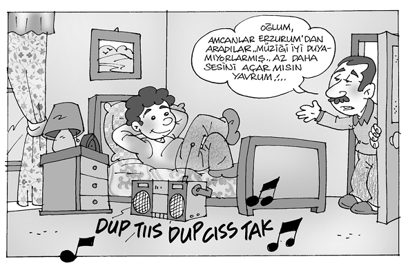
Kimlik arayışının temeli, gencin başkalarından ayrı ve farklı kişilik kazanmak amacıyla yaşadığı kültür içinde amaçlarını, beklentilerini, değerlerini, davranışlarını seçmesine dayanır. Bu arayış değişik yollarla, yöntemlerle gerçekleşebilir. Kimi genç, ailenin kültürü içinde, ailenin aktardıklarıyla yetinir. Kimi, arkadaş ortamı içinde arayışını sürdürür. Kimi dinleyerek, görerek, okuyarak, olumlu ya da olumsuz iletilerle engin ufuklara açılır. Ya yolunu kaybeder ya da değişik ve yeni yollar bulur.
Ailenin ve çevrenin gençle kurup sürdürdüğü iletişimde ve verdiği iletilerde çelişkilerin olması, ayrılığı, farklılığı, çatışmaya dönüştüren etkenler arasında ön sıralarda yer alır. Aile bir yandan gence “büyüdüğünü”, “kendi başına karar vermesi gerektiğini’” anlatırken, öte yandan “Aklın ermez.”, “Sen daha çocuksun.” diyerek onu küçük görür. Genç için de benzer çelişkiler söz konusudur. İstediği zaman kendini “koca adam” olarak görüp tüm sorunları çözeceğini sanır. İşine gelmeyen durumlarda “Aklım ermez.”, “Daha çocuğum.” diyerek sorumluluk yüklenmekten kaçar. Gerçekte aile, gençle doğru ve sağlıklı iletişim içindeyse, gencin önemli konularda, sorunlarda “Daha çocuğum.” diyerek anne babadan destek ve yardım istediğini; giyinme, süslenme, müzik türü, eğlenme, gezme gibi durumlarda “Ben artık büyüdüm.” dediğini anlayabilir.
Aile, gençle doğru ve sağlıklı iletişim içindeyse, gencin önemli konularda, sorunlarda “Daha çocuğum.” diyerek anne babadan destek ve yardım istediğini; giyinme, süslenme, müzik türü, eğlenme, gezme gibi durumlarda “Ben artık büyüdüm.” dediğini anlayabilir.
b) Gençlerle İletişim
Gençlerle iyi bir iletişim için, öncelikle onun bir insan olduğunu kabul edip, ona sevgi ve saygı gösterdiğimiz belirtilmelidir. Onun yaşının, çağının özelliklerini bilip, ona göre ilişki kurulmalıdır. Örneğin, 14-15 yaşındaki genç hayale daldığı zaman onu eleştirmektense “Bırak da birazcık hayale dalsın.” denebilmelidir. Genç bugün kızar, yarın sever. Böyle bir değişkenlikte, “Maymun iştahlısın.” demeyip, onun bu durumuna anlayış gösterilebilmelidir. Genç, arkadaşları arasında sivrilmek, kendini göstermek ister. Böyle bir durumda ona destek olunmalıdır. Bırakın, kendini istediği gibi anlatsın. Gençlerle iletişim kurmak için; erişkin ve yetişkin kuşak olarak önce gencin bir insan olduğu kabul edilmelidir. Ona sevgi ve saygı gösterildiği belirtilmelidir.
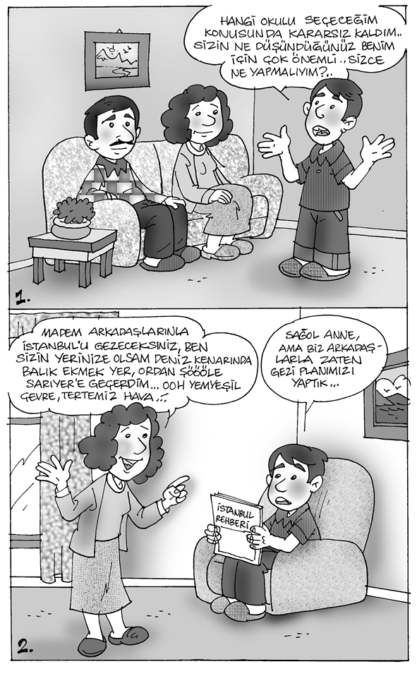
Genç bugün kızar, yarın sever. Böyle bir değişkenlikte, “Maymun iştahlısın.” demeyip, onun bu durumuna anlayış gösterilebilmelidir. Genç, arkadaşları arasında sivrilmek, kendini göstermek ister. Böyle bir durumda ona destek olunmalıdır. Bırakın, kendini istediği gibi anlatsın.
Gençlik çağına özgü biyolojik, ruhsal ve toplumsal değişme ve gelişmelerin, gencin davranışına ne biçimde yansıdığı bilinmeli, tanınmalıdır. Gençlik çağının fırtınalı ve zor bir dönem olduğu göz önünde tutulmalıdır.
Gencin duygusal değişiklikleri ve düşlemlerden kaynaklanan davranışları karşısında serinkanlı olup, kırıcı, sert, yıkıcı davranışlarda bulunulmamalıdır.
Genci denetlemek, engellemek, ödün veya ödül vermekte tutarlı davranılmalıdır. Kimi zaman ödüle değer bulunan bir davranış, başka bir zaman kötülenip yerilmemelidir.
Gencin yaşamına, giyinişine, süslenmesine ilişkin karar alırken, durumu gençle konuşup, onun düşünce ve önerilerine anlayış ve saygı gösterilmelidir.
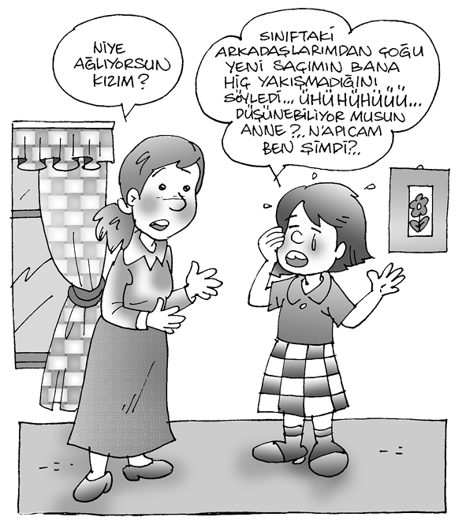
Aile ve evle ilgili konularda ve sorunlarda gencin düşünce ve önerileri alınmalıdır. Onunla konuşup tartışmaktan kaçınılmamalıdır.
Erişkinlerin gençlerle kurduğu iletişimde çoğunlukla, cezalandırıcı anne-baba benliği ve başkaldıran çocuk benliği kullanılmaktadır.
Kişide üç türlü benlik vardır. Bunlar, çocuk, anne-baba ve erişkin benliğidir. Erişkinlerin gençlerle kurduğu iletişimde çoğunlukla, cezalandırıcı anne-baba benliği ve başkaldıran çocuk benliği kullanılmaktadır. Bu durumda sağlıklı iletişim kurulmasına imkân yoktur. Sağlıklı bir iletişim kurabilmek için, olumsuz duygulardan arınmış olmak, kişiyi insan olarak kabul edebilmek gereklidir. Erişkinlerin gençlerle kurduğu iletişimde, onların tepkisini alan iletiler (mesajlar); ad takma, alaya alma, ders verme, emir verme, öğüt verme, övgü, suçlama, soruşturma, tartışma, tavır koyma, uyarma, aşırı güven verme şeklindeki mesajlardır.
Gencin aktarmak istediklerini herhangi bir nitelemeyle kestiğimiz zaman, iletişim bozulur, onlarla anlaşma olmaz. Genç “Bunlar beni anlamıyor.” der.
Gençlerle iletişimi karşılıklı güven ve duygu alışverişi içinde gerçekleştirmek de son derece önemlidir. Karşılıklı güven yoksa, günlük hayatta en çok kullandığımız sözcükler bile karşı tarafça yanlış algılanabilir. Bu eşler arasında da söz konusu olur. En çok kullandığımız “Katılmıyorum.” sözü, karşınızdaki kişiyle sağlıklı bir duygu alışverişi yoksa “Paylaşmıyor.” diye algılanır. Yine,
“Katılmıyorum”, “Düşünmeden karar veriyor.”
“Çok duygusalsın.”, “Düşünmediğimi sanıyor.”
“Endişelenme”, “Sorunlarımı ciddiye almıyor.”
“Seni sıkıyorsa yapma.”, “Bana destek olmuyor.”
“İstiyorsan yap.”, “Beni bencil sanıyor.”
“Üstünde durma.”, “Beni anlamıyor.”
“Sorun değil.”, “Abarttığımı sanıyor.”
“Çok çalışıyorsun.” “Beceriksiz sanıyor.”
“Kendini yıpratma”, “Çabalarımı görmüyor.”
şeklinde algılanabilir. O nedenle bu noktaya gelmemek gereklidir.
Erişkinlerin gençlerle kurduğu iletişimde, onların tepkisini alan iletiler (mesajlar); ad takma, alaya alma, ders verme, emir verme, öğüt verme, övgü, suçlama, soruşturma, tartışma, tavır koyma, uyarma ve aşırı güven verme şeklindeki mesajlardır.
c) Gençlerle İletişim Kurmanın Yolları
Kuşak çatışması, gençlerle yetişkinler arasındaki iletişim kopukluğundan doğar. Bu nedenle kuşak çatışmasının sağlıksız boyutlara erişmesini önlemek iyi bir iletişimle gerçekleşebilir. Bu iletişimi sağlıklı biçimde kurup sürdürebilmek, öncelikle yetişkin kuşağın görevidir. Aşağıda belirtmeye çalıştığımız ilkelere uyulduğunda istenen amaca ulaşılır:
Siz erişkin ve yetişkin kuşak olarak, önce gencin bir insan olduğunu kabul edin. Ona sevgi ve saygı gösterdiğinizi belirtin.
Gençlik çağına özgü biyolojik, ruhsal ve toplumsal değişme ve gelişmeleri, bunların gencin davranışına ne biçimde yansıdığını bilip tanıyın; gençlik çağının fırtınalı ve zor bir dönem olduğunu anımsayıp göz önünde tutun.
Gencin duygularındaki değişiklikler ve düşlemlerden kaynaklanan davranışları karşısında serinkanlı olun; kırıcı, sert, yıkıcı davranışlarda bulunmayın.
Genci denetlemek, engellemek ya da ödün, ödül vermek için tutarlı davranın; kimi kez ödüle değer bulduğunuz bir davranışı başka bir zaman kötüleyip yermekten kaçının.
Gencin yaşamına, giyinişine, süslenmesine ilişkin karar alırken durumu gençle konuşun, onun düşünce ve önerilerine saygı gösterin.
Aile ve evle ilgili konularda (ve sorunlarda) gencin de düşünce ve önerilerini alın, onunla konuşup tartışmaktan kaçınmayın.
Konuşma ve tartışmalar sırasında gencin doğru olduğunu düşündüğü şeyi ifade etmesi için yardımcı olun.
Gençlerle yapılan konuşma ve tartışmaları, onları kor- tutarak ve yıldırarak kesmeyin.
Gencin tutum ve davranışlarına biçim ve yön verirken, “Benim geçliğimde…” diye başlayan konuşma ve öğütlerden kaçının.
Gence bol bol öğüt vermek yerine, örnek davranışlar gösterin.
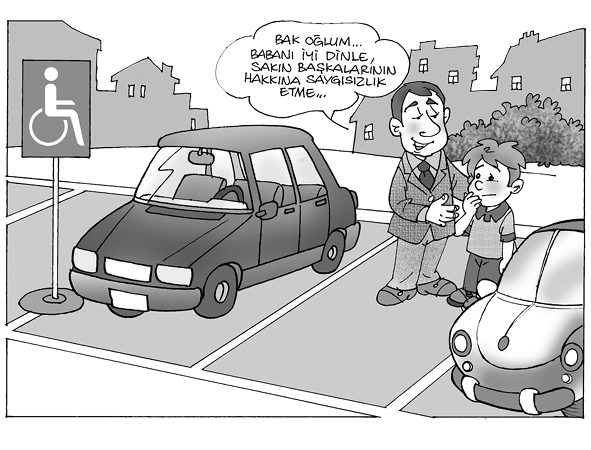
d) Yetişkinlerle İletişim Kurmanın Yolları
İki kuşak arasındaki iletişimin sağlıklı biçimde kurulup sürdürülmesi için gençlere de düşen görevler vardır. Şöyle ki:
Değişme ve gelişme çağında olduğunuzu, bu çağın davranışlarınızı etkilediğini bilin.
“Gençler bilseydi, yaşlılar yapabilseydi.” özdeyişine uygun iletişim kurmaya çalışın.
Bütün amaç, beklenti ve isteklerinizin hemen o anda tümüyle gerçekleşmeyeceğini bilin.
Her yerde ve her zaman yetişkinlerden öğrenmeniz gereken bilgi ve deneyimler olduğunu kabul edin.
Konuşma ve tartışmalarda kırıcı ve sert olmaktan kaçının.
Engeller, sorunlar, zorluklar karşısında size destek ve yardımcı olacak insanların anneniz, babanız, yakınlarınız olacağını unutmayın.
Yetişkinlere danışmaktan kaçınmayın.
Gençlerle yetişkinler arasında sağlıklı iletişim için yapılan bütün bu önerileri bir iki tümceyle şöyle özetleyebiliriz: Gençler ve yetişkinler, iletişim sırasında eşduyum (empati) içinde olun. Kendinizi karşı tarafın yerine koyun. Siz genç olsaydınız, bu durumda nasıl davranırdınız? Siz yetişkin olsaydınız, bu durumda nasıl davranırdınız? Sorulara içtenlikle cevap verin ve ona göre davranın.
Biz genci dışlarsak, bir alt kültürün içine itilmiş olur. Çünkü onun toplumsal ortama ihtiyacı vardır. Kültür içindeki kültür anlamına gelen alt kültür;
Evrensel-ulusal kültürden ayrılma,
Farklı amaç, farklı beklenti, farklı davranış biçimi ve farklı değer,
Çocuklarınız sizin çocuklarınız değildir. Onlar hayatın kendi varoluş özlemi için doğan kızlar ve erkeklerdir.
Sizin vasıtanızla dünyaya gelirler fakat sizden gelmezler.
Sizinle beraberdirler, fakat size ait değildirler.
Onlara sevginizi verebilirsiniz fakat düşüncelerinizi veremezsiniz.
Çünkü kendi düşünceleri vardır.
Vücutlarını yanınızda tutabilirsiniz, ruhlarını tutamazsınız.
Çünkü ruhları yarında yaşar, yarına gidemezsiniz, rüyanızda bile.
Onlar gibi olmak için çabalayabilirsiniz, fakat onları kendinize benzetmeye çalışmayın.
Çünkü hayat ileriye doğru yürür, dünde oyalanmaz. Siz yayasınız, çocuklarınız geleceğe fırlatılmış canlılardır.
Halil Cibran
Kültürel üstünlük,
İletişime kapanma, olabilir.
Gencin bir alt kültürün içinde kalması, aile yapısından, aile içi iletişimden, ailenin eğitim biçiminden, gençlik çağının özelliğinden, kimlik arayışından kaynaklanabilir. “Ben kimim?” diye sorduğu zaman, anne baba, okul, öğretmen tarafından (“Aklın ermez.”, “Beceriksizsin.” gibi sözler kullanılarak) “Sen hiçsin.” denilmesini, bırakın genci, hiç kimse kabul edemez. Bu nedenle “Sen aslansın.” diyenin peşinden gidecektir. Bu, normal kabul edilmelidir. “Sen aslansın.”ı bir alt kültürün dedirtmesine müsaade etmeyin. Gencin hava, su, yemek kadar ihtiyacı vardır buna. Herhangi bir alt kültüre girmekle, ben falan grubun üyesiyim şeklinde gururlanma şansına sahip olur. Kendince kimliğini bulur.
“Ben kimim?” diye sorduğu zaman, anne baba, okul, öğretmen tarafından (“Aklın ermez.”, “Beceriksizsin.” gibi sözler kullanılarak) “Sen hiçsin.” denilmesini, bırakın genci, hiç kimse kabul edemez. Bu nedenle “Sen aslansın.” diyenin peşinden gidecektir. Bu, normal kabul edilmelidir. “Sen aslansın.”ı bir alt kültürün dedirtmesine müsaade etmeyin.
Alt kültürün sağladığı olanaklar:
Kimlik
Saygınlık
Grup dayanışması
Toplumsal rol ve yer
Amaç
Değer
İlke, kural
Paylaşma
Davranış kalıpları
Bu olanaklar verilen genç, kendini o alt kültürün içinde buluyor.
Davranış kalıplarının benimsenmesi;
Boyun eğmek,
İnanmak,
Özdeşleşmek,
Özümsemek,
Toplumsal hızlanma,
Toplumsal riske girme,
Çıkar ilişkileri,
Öndere, gruba bağımlılık,
Üstünlük duygusu,
Ortak kültürden soyutlanma,
Ve ortak kültüre karşı kızgınlık, öfke, kin, nefret, endişe, kaygı, korku duygularının olması şeklindedir.
e) Kimlik Bunalımı ve Kargaşası
Kimlik bunalımı (identity crisis), gencin kimliğini kazanabilmesi için bilinçli ya da bilinçdışı olarak, bilerek ya da bilmeden yaptığı bütün çabaların yarattığı çatışmadır. Gencin kaygılı olmasına yol açar; kaygının boyutları ruhsal sorunlara, bozukluklara neden olabilir.
17 yaşında, lise öğrencisi kız, günlüğünde kimlik bunalımını şöyle anlatıyor:
“Hepimiz sahteyiz, yalancıyız. Katlanılmaz, dayanılmaz ve mide bulandırıcı bir dünyada yaşıyoruz. Bu eziyete, işkenceye, korkuya katlanmak zorunda olduğumuzu sanmıyorum. İşte insanların baskılarından biri de bu. Katlanmak! Hayır! Bu zorunlu değil, eğer kimse bize doğmak ister misin, diye sormadıysa, en azından yaşamak isteyip istemediğimize de kendimiz karar verebiliriz. Ben kararımı çoktan verdim meselâ. Buralardan gidiyorum, can sıkıntılarının olmadığı, sorunların olmadığı, insanların tek renk olduğu başka bir dünyaya… Benim aslında sorunlarım yok sayılır. Var, hem de çok ama size söylememem gerekiyor. Çünkü oyunun parçası bu. Annemlere sorarsanız, her şey çok güzel, ben çok mutluyum ama öyle değil işte… Niye yazıyorum peki bunları? Çünkü anlayın istiyorum. Sorgulayıp durmayın. İnsanların ölmeye karar vermeleri doğal bir şey. Konuştuğum çoğu kişi ‘Korkak olma, savaş! Kaçmak korkaklığı gösterir.’ diyor. Ama öyle değil işte! Belki de hasta olan, garip olan sizsiniz. En azından, ben gerçeği görebilen bir insanım. Oysa sadece sizin gerçekleriniz var. Hata burada başlıyor. Beni anlamıyorsunuz. Kendinizi anlatıyorsunuz. Ben de kendimi anlamıyorum. Ben kimim? Kimliğim nerede?”
Kimlik kargaşası (identity confusion) kimlik bunalımını kendi gücüyle aşamayan, çözemeyen gencin kaygı ve korku içinde panik duruma girmesidir. Aileye, anne babaya, topluma karşı saldırgan davranışlar, şiddet eylemlerinde bulunur. Kimlik kargaşası sorununda ruhsal çöküntü, aşırı taşkınlık ve saldırganlık, antisosyal davranışlar, şizofreniye benzeyen belirtiler görülebilir.
Gençlerin etnik köken, din, mezhep, tarikat, politika, ideoloji gibi konularla ilgili tutumları, kimi kez gelip geçici olur, kimi kez sürekli yaşam biçimi durumuna gelir. Bu tip gruplar içinde bulunmak, gencin grup kimliğini benimsemesiyle kimlik kargaşasını geçici olarak bastırır. Ancak kişiliğin gelişmesine olumsuz, zararlı etkileri olur.
17 yaşında lise öğrencisi kız kimlik kargaşasını şöyle anlatıyor:
“Ben intihara teşebbüs ettim. Ama midemin yıkanması ve doz yetersizliğinden kurtuldum. Ailem yüzeysel olarak dertlerimin derslerimden kaynaklandığını sanıyor. Hayır, boşluk, hiçlik, yok olma korkusu bu. Hiçbir şey yapamama, donukluk, durgunluk, ilgisizlik, isteksizlik ve her şeye karamsar bakma. Çok sevgili eğitim sistemimizle de ilgili. Gençliğimizi yaşayamadan önümüze konulan test sorularını çözmeye zorlanmamız, hiçbir şekilde çocukluğumuzu, gençliğimizi yaşayamamamız, bizi bütün bu sorunlara itiyor. Geleceğin yok olması. Bunalım işte bu! Bezginlik ve sıkılma. Bir noktaya geliyor ve artık yaşamak gözünde büyüyor insanın. Hekimlere göre ‘benlik kaygısı’ söz konusu. Kayıp benlik. Kimdim ben ve ne yapmaya çalışıyordum? Daha sayamayacağım, bir dolu, içinden çıkılmaz sorunlar. Cevaplarını hâlâ bulamadım. Sadece erteledim. Ertelemek, niye ve nereye kadar?”
Kimlik arayışına (ve kimlik bunalımına) çözüm, gençleri anlamaya çalışmak, kendilerini anlatmalarına, tanıtmalarına olanak sağlamaktır. Gençler neden karamsar ve kötümser oluyorlar? Neden amaçlarını, beklentilerini, umutlarını yitiriyorlar? Neden yaşamdan kopuyorlar? Neden intiharı düşünüyorlar? Neden intiharı çıkar yol olarak görüyorlar? İntiharı neden yüceltiyorlar? Bu sorulara cevap bulmak gereklidir.
Gençler, toplumsallaşma sürecinde kendilerinden beklenen durumları, rolleri, yerleri benimsemek için zorlanıyorlar. Kendileri olmaktan uzaklaştıklarını düşünüyorlar. Bu çatışma ve çelişkiden sıkılıp üzülüyorlar, kaygıları artıyor. Kendilerini suçluyorlar. Suçluluktan kurtulmak için gerçek dışı bir dünya kurup yaşamlarını bu dünyanın düşleri, fantezileri içinde sürdürmek istiyorlar. Bu dünyada kendi seçtikleri kimliği, kişiliği bulacaklarını sanıyorlar. Ölümü, kişiliğin gücünü, kuvvetini gösteren bir simge olarak yüceltiyorlar. Ölüme karar verip eyleme dönüştürmekle kişiliklerinin başkalarının gözünde yüceleceğini düşünüyorlar. Bu düşüncenin sonucu belli. İntihar girişimi ya da intihar sonucu acı son, ölüm...
Şeytanın Çocukları
Bütün semavî dinlerde şeytan, Tanrı’nın birliği, bütünlüğü, güven verici, kollayıcı, koruyucu nitelikleri karşısında başkaldıran, karşı çıkan bütün kötü ruhların, yaratıkların başı olarak nitelendirilen soyut varlık olarak kabul edilmiştir. İbranice düşman, hasım anlamına gelen “aşatan” sözcüğünden türetilen “satan” sözcüğü, günümüzde satanizm olarak adlandırılan, şiddet öğeleri içeren bir gençlik alt kültürünü tanımlamaktadır.
Satanist alt kültürünün Bağdat, Halep, Musul bölgelerinde yaygın olan, şeytanı yücelten, şeytana tapan bir İslam mezhebi olan “Yezidî” mezhebiyle ilgisi yoktur. Son on beş yirmi yıl içinde oluşan, üç beş yıldır ülkemiz gençliği arasında yayılan batı kökenli bir gençlik alt kültürüdür satanizm. Ülkemizde satanist alt kültürünü benimsemiş olanlar genellikle 15-22 yaş dilimi içinde bulunan, çoğu orta-üst ekonomik, toplumsal düzeyde aile yapısından gelen, ilköğretim son, lise, yüksek öğrenim gören gençlerdir.
Satanist alt kültürü içinde yer alan gençler, gelenekçiler ve modernler olarak ikiye ayrılmışlardır. Çoğunluğunu modern satanistlerin oluşturduğu satanist alt kültüründe şeytan, kötülüklerin değil, iyiliklerin simgesi “süperstar” olarak kabul edilir. Modern satanistler, satanizmin kurucusu Antar Szador Lvey’in “Satanizm, bireyselliğe önem veren, güçlendiren, yüreklendiren hatalı davranandan, yanlış yapandan öç alan bir dindir.” görüşünü benimsemişlerdir. Kurduğu “Şeytanın Köleleri” adlı örgüt içinde, “Bana inanıyorsan, ben oldukça var olacağını kabul ediyorsan benim için yaşamına son verebilmelisin.” diyen, “kötü ruhtan kurtulmak için” ünlü sinema oyuncusu Sharon Tate ve dört arkadaşını öldüren Charles Manson’un yaşantısını örnek almışlardır. “Blackmetal” adı verilen çok tanrılı içeriği olduğu söylenen rock müziğiyle coşkuları şiddete dönüştürecek ivmeyi kazanmaktadırlar.
Şiddeti çağrıştıran giysiler ve takılar içinde, Budizm ya da Taoizm gibi doğu kaynaklı öğretilerden, üstün ırkı, baskıyı, sertliği, şiddeti, yetkeyi savunan siyasal görüşlere kadar geniş bir yelpazede yer alan kavram karışıklığıyla, “Kendi dinini kendin yarat.” anlayışıyla, şiddet içeren ayinler ve törenler yaparlar.
Bilindiği gibi, bu törenlerden birinde, 1999 yılı eylül ayında, satanist gençlerden bir grup, kedileri öldürmekle başlayıp, 21 yaşındaki bir genç kızı beraberce boğup şeytana kurban etmişlerdir. Cesedi Ortaköy mezarlığına gömmüşler, cesedin ortaya çıkmasıyla cinayet aydınlanmıştır.
Kendini modern satanist olarak tanımlayan 19 yaşında yüksek öğrenime devam eden bir genç şöyle anlatıyor:
“Ben doğduğumdan beri farklıyım. İnsan böyle doğar. Ben satanist olmadım. Satanist doğdum. Bu nedenle gerçek satanist benim. Öbürlerinin başkanıyım, önderiyim, öğreticisiyim. Bu durumumu sürdürüyorum... Ben büyüğüm... Kendimi ve başkalarını kandırmıyorum. Ancak kafası bana uymayanları sevmiyorum. Bana hatalı davranandan, yanlış yapandan öç alıyorum. Bana acımayana ben de acımıyorum. Biz kimseyi şeytana kurban etmeyiz. Ancak kendi isteğiyle kurban olmak isteyen olursa onu önlemeyiz. Kurban olması gereken bedenin ölmesi gerekmez. Bileğinde, elinde, kolunda, parmağında yara açılması, kan akması yeterli… Kan, her pisliği temizliyor. Benim bedenimde onlarca yara izi var. Onları ben yaptım. Her yaramın bir anısı var. Zaman zaman yara izlerini kanatıp anılarımı tazeliyorum. Hayvanları severim. Sevdiğim için de en sevdiğim varlığa, şeytana kurban etmekten çekinmem.”
3. Gençlik Çağında Görülen Ruhsal Bozukluklar
Gençlik çağının içinde bulunduğu yaş diliminde çocukluk çağından sürüp gelen ya da bu çağda ortaya çıkan ruhsal bozukluk ve hastalık olasılığı söz konusudur. Bu nedenle, alışılagelmiş davranışlarda, tutumlarda, eylemlerde, bu çağa özgü değişiklikler dışında, farklılaşma olursa, başarı ve uyum sorunları görülürse, gencin dikkatle izlenmesi gereklidir.
3-5 yaş dilim arasında bulunan çocukların % 15’inde hafif, % 7’sinde ciddi ruhsal bozukluk ve hastalık olasılığı vardır. 5-14 yaş dilimi arasındaki çocuk ve gençlerde ruhsal bozukluk ve hastalık görülme sıklığı % 6,5-7 arasında olup, bunun % 25’inin büyük kentlerde, % 12’sinin kırsal bölgelerde olduğu belirtilmiştir. Büyük kentlerde oranın yüksek olması, ailelerin gerekli sağlık kuruluşlarına, hekimlere kolay ve çabuk ulaşabilmesi, başvuruların kayda geçmesiyle açıklanmıştır.
Çocukluk ve gençlik çağının başlangıcını da içine alan 0-14 yaş dilimi arasındaki bir yıl içinde ruhsal bozukluk, hastalık, akıl hastalığı çıkma olasılığı % 15-20 arasında değişen, oldukça yüksek bir orana ulaşmaktadır. Bu bölümde, çocukluk ve gençlik çağında ortaya çıkan ruhsal bozukluk, hastalık ve akıl hastalıklarının tipleri, tanısı, genel nüfus içinde yaygınlık oranı ve ilk ortaya çıktığı yaş üzerinde durulacaktır.
Çocukluk ve gençlik çağında görülen ruhsal bozukluk ve hastalıkları kabaca şu gruplar içinde toplayabiliriz:
Ruhsal Gelişme Bozuklukları
Psikozlar
Duygulanım Bozuklukları
Kaygı Bozuklukları
Kişilik Bozuklukları
a. Ruhsal Gelişme Bozuklukları
a. 1) Özel Motor Beceri Bozukluğu
Motor beceri bozukluğu, özel gelişimsel öğrenme bozukluklarına benzer. Çocuğun yaşı, ölçülen zekâ bölümü, beden yapısı ve aldığı eğitimle, öğrenimle bağdaşmayan hareket kusurları; amaçlı, düzenli, uyumlu hareketlerde becerisizlik, bozukluk biçiminde görülür. Bu durum, özellikle yemek yerken, çatal bıçak kullanırken, su içerken, giyinip soyunurken belirginleşir. Elindeki eşyaları düşürüp kırma, odada bulunan eşyalara çarpma, sakarlık, hareket becerisine dayanan oyunlarda, sporlarda başarısızlık, resim ve yazı bozuklukları dikkatle üzerinde durulması gereken belirtiler arasındadır.
Genel nüfus içindeki yaygınlığı % 2-3 olup, ortaya çıkış yaşı yaklaşık 8-10’dur. Erkek çocuklarda daha fazla görülür.
a.2) İletişim Bozuklukları
İletişim bozuklukları, sözel anlama ve anlatma gibi dil gelişmesiyle ilgili bozukluklarla, sözcükleri bağlama bozukluğu ve kekemeliği içeren geniş bir yelpaze içinde yer alır.
İletişim bozukluklarının genel nüfus içinde yaygınlığı % 5 olup, ortaya çıkış yaşı yaklaşık olarak 3-5 arasındadır.
İletişim bozuklukları arasında sık görülen kekemelik, konuşma bozukluğudur; ses, hece ya da sözcüklerde duraklama, takılma, uzatma, yineleme biçiminde ortaya çıkar. Konuşmanın akışını keser. Kekemeliğin şiddeti ve süresi, kaygı düzeyi ve toplumsal ortamla ilişkili olarak artar, azalır, kaybolur.
Kekemelik, okul öncesi çağında % 3-10; okul çağında % 2 oranında olup, ortaya çıkış yaşı ortalama 3-4’tür. Erkek çocuklarda daha sık görülür. Gençlik yaşında azalabilir, düzelebilir.
a.3) Yaygın Gelişimsel Bozukluklar
Yaygın gelişimsel bozukluklar, erken çocukluk çağında başlayan, aşağıdaki ciddi ruhsal bozukluk tablolarını içerir.
Otistik bozukluk: Duygusal donukluk, küntlük, ilgisizlik, sözel ve sözel olmayan iletişimde bozukluk, yetersizlik; basmakalıp, sınırlı, yineleyen davranışlarla dikkati çeker. Genel nüfus içinde yaygınlığı % 4-5’tir.
Asperger bozukluğu: Otistik bozukluğa benzer. Ancak dilde, sözlü iletişimde bozukluk görülmez.
Rett bozukluğu: Başın büyümesinde yavaşlama, el becerilerinin azalması, kaybolması; basmakalıp, sınırlı, yineleyen el kol hareketleri; sözel anlatımın bozulması, duygusal donukluk, küntlük, ilgisizlikle dikkati çeker.
Desintigratif bozukluk: Dili anlama ve anlatma yanında, iletişim bozukluğu, basmakalıp, sınırlı yineleyen davranışlar, el kol hareketlerinde düzensizlik, bağırsak, mesane denetiminin kaybolması gibi belirtilerle ortaya çıkar. Genel nüfus içinde çok ender görülür. Genellikle doğumdan 5 ay sonrayla 48 ay sonrasında ortaya çıkar.
a.4) Dikkat Eksikliği ve Aşırı Hareketlilik
Dikkat eksikliği ve aşırı hareket yanında, saldırgan, sert, şiddet içeren davranışlarla birlikte, karşı, ters, zıt davranışta bulunma durumudur. Genel nüfus içinde yaygınlığı okul çağı çocuklarında % 3-8’dir. Ortaya çıkış yaşı 3-4 olup, erkek çocuklarda kızlara oranla üç kat daha fazladır.
b. Psikozlar
Şizofreni
Şizofreni donukluk, durgunluk, küntlük, ilgisizlik isteksizlik gibi duygusal azalma ve algı, davranış, düşünce bozukluklarıyla birlikte giden, uzun süreli, ilerleyici nitelik taşıyan en önemli akıl hastalığıdır.
Genel nüfus içinde yaygınlığı, yaklaşık olarak % 1 olup, ergenlik, genç erişkinlik yaşında ortaya çıkar.
Çocukluk çağı şizofrenisi duygusal donukluk, küntlük, ilgisizlikle başlar. Erişkinlerde görülen belirtiler ve bulgularla ortaya çıkar. Aynı tanı ölçütleri kullanılır. Genel nüfus içinde yaygınlığı %0,01’dir. Ortaya çıkış yaşı ortalama 10-14 arasındadır.
Birdenbire başlayan ruhsal bozukluklar
Çocuklarda ve gençlerde birdenbire başlayan psikozlar (acute psychosis) kısa sürer, tekrarlayıcı özellikleri vardır. İki uçlu depresyon ya da karışık duygu durumu bozukluğu gibi belirtiler, dalgalanmalar gösterdiği gibi, şizofreniye benzer tablolar da sık görülür.
Genel nüfus içinde çok ender görülür. Ortaya çıkış yaşı 10-17 yaş dilimi arasındadır.
Epilepsi
Epilepsi (sara) nöbet nöbet gelen, bilinç bozukluğu ve kaybı olan ya da olmayan istem dışı davranışlardır.
Genel nüfus içinde sıklığı % 0,5-1 olup, birincil (idyopatik) epilepsi ergenlik, genç erişkinlik döneminde başlar, ikincil (symptomatik) epilepsi merkezî sinir sistemi hastalıkları sonucu ortaya çıktığından, başlangıç yaşı değişir.
c) Duygulanım Bozuklukları
Gençlik çağında duygulanım bozuklukları sık görülür. Genç, aile, çevre bakımından büyük ve ciddi sorunlar yaratır. Gencin ve ailenin bozukluğu anlaması, hekime başvurması gecikirse, intiharla sonlanan durumlar ortaya çıkabilir.
Duygulanım bozukluklarında temel bulgu, kaygı düzeyinin yüksekliğiyle birlikte olan ya da olmayan çöküntüden coşkuya, taşkınlığa kadar geniş bir yelpaze içinde yer alan duygusal değişmelerdir. Genel olarak, bu değişmelere bedensel bulgular, davranış, eylem, tutum değişmeleri de eklenebilir.
Duygulanım bozuklukları, ortaya çıkan belirti ve bulgulara göre, ruhsal coşku, taşkınlık (mani) ve ruhsal çöküntü, çökkünlük (depresyon) olarak ayrılır. Duygulanım bozukluklarının sınıflandırılmasında yelpazenin bir ucunda mani, öteki ucunda ağır depresyon hastalıkları bulunmakta, arada maniden önce ya da sonra görülen ya da bunların dışında ortaya çıkan, hafif coşku ve taşkınlık gösteren hipomani adını alan klinik tablo yer alır.
c.1) Depresyon
Depresyonlarda, elem doğrultusunda artmış olan duygulanım bozukluğu, ortak, temel bulgudur. Haz duygusunun azalması, kaybolması; ilgisizlik, isteksizlik, kaygı, korku, karamsarlık, keder, huzursuzluk, mutsuzluk, umutsuzluk, yalnızlık duyguları elem kapsamı içinde yer alır.
Depresyonlarda ortak olan ve genellikle sıklıkla görülen temel bozukluk kederli duygu durumudur. Kederli duygu durumu, elem doğrultusunda artmış olan duygulanımdır. Kederli duygu durumdaki değişmeler, depresyonun düzeyi ve şiddetiyle doğru orantılı olarak artar ya da azalır. Duygu durumda huzursuzluk, tedirginlik de bulunabilir.
Kederli ya da tedirgin duygu durumu, zihinsel işlevlerde azalma, yavaşlama yapar. Buna paralel olarak hareketler azalır, yavaşlar. Böylece hastalarda ruhsal etkinliklerde de azalma ve yavaşlama olur.
Başlangıçta hasta o güne dek yapabildiği günlük işleri yapmakta zorluk çektiğini söyler. En basit işleri yaparken zorlanır. Günlük yaşam hastaya ağır gelmeye başlar, insanlar arası ilişkiler ve iletişim onu zorlar.
Sözlü ve sözsüz iletişim biçimi, elem doğrultusunda artmış olan duygu durumunu ortaya koyar. Sözcükler karamsarlık, kötümserlik, mutsuzluk, sıkıntı, umutsuzluk ve yalnızlığı anlatacak biçimde seçilir. Mimikler de elem ve kaygıyı yansıtır. Jestler azalır.
Maskeli depresyon: Gençlerde ağrıların, bedensel belirtilerin eşlik ettiği maskeli depresyon olasılığı yüksektir. Maskeli depresyonda bedensel belirtiler, bulgular, yakınmalar ön planda olup, duygu durumunu ve zihinsel belirtileri örter. Bu nedenle maskeli depresyon şöyle tanımlanır: Depresyonun ilk ve temel belirtisi olan elem doğrultusunda artmış duygu durumunun açık seçik anlaşılmadığı, fark edilemediği, ancak dolaylı olarak bulunabildiği, bedensel belirtilerin, bulguların ve yakınmaların ortaya çıktığı durumlarda, maskeli depresyon düşünülmelidir.
Maskeli depresyon çok çeşitli, değişik klinik tablolar gösterebilir. Her organ ve sistemle ilgili belirti, bulgu ve yakınmalar ortaya çıkabilir. Bu nedenle maskeli depresyon tanısı konan kişi, değişik uzmanlar taralından değişik tanılar konarak tedavi edilir.
Reaktif depresyon: Yaşam olaylarına bağlı olarak ortaya çıkar. Çoğunlukla toplumsal koşullar ve ortamla, depresyonun belirtilerinin görülmesi arasında yakın ilişki bulunur.
Bu tür depresyonlarda suçluluk, günahkârlık düşünceleri, hezeyanları bulunmaz. Bulunduğunda, yaşam olaylarıyla ilgisi olduğu görülür. Uyku bozuklukları sıklıkla geç ve güç uykuya dalma biçiminde olup, sabahları erken uyanma olmaz. İştahsızlık ve kilo kaybı ya hiç yoktur ya da çok hafiftir. Kaygı ve öteki belirtiler gün boyunca artar, geceleri doruğa ulaşır.
Depresyonlarda, elem doğrultusunda artmış olan duygulanım bozukluğu, ortak, temel bulgudur. Haz duygusunun azalması, kaybolması; ilgisizlik, isteksizlik, kaygı, korku, karamsarlık, keder, huzursuzluk, mutsuzluk, umutsuzluk, yalnızlık duyguları elem kapsamı içinde yer alır.
Gençlik çağında görülen ruhsal bozuklukların, hastalıkların % 20-25’inin depresyon olduğu kabul edilmiştir. Depresyonların genel nüfus içinde görülme sıklığı, okul öncesi dönemde % 1, ilköğretim döneminin başlangıcında % 2’dir. Bu oran gençlik çağında % 4-5’e ulaşmaktadır.
Duygulanım bozukluklarının başlangıcı, genel olarak 12-24 yaş dilimi arasında olup, kızlarda erkeklere oranla 2-3 kat daha sık görülür.
c.2) Uyum Bozukluğu
Uyum bozukluğu, bireyin, aile, ev, iş, yakın ve uzak çevre ilişkilerini olumsuz etkiler. Başarı, çaba, çalışma gücü azalır. Güven duygusu kaybolur. Genel kaygı bozukluğu ya da ruhsal çöküntüyü anımsatan belirtiler, yakınmalar ortaya çıkar. Zaman zaman görülen kızgınlık, öfke patlamaları, saldırı, şiddet ve taşkınlık yanında, donukluk, durgunluk, hareketsizlik gibi davranış bozuklukları bu tabloya eklenebilir.
Genel olarak, travma sonrası stres bozukluğu dahil, stres yaratan nedenler, hastalık, kardeş doğumu, çevre, okul değiştirme bu duruma yol açabilir. Ruhsal bozukluk, hastalık yüzünden tedavi gereksinimi gösteren çocukların, gençlerin % 10’unda uyum bozukluğu bulunabilir.
c.3) Travma Sonrası Stres Bozukluğu
Son yıllarda dünyada ve ülkemizde kaygı bozuklukları başlığı altında travma sonrası stres bozuklukları (post traumatic stress disorders) da yer almıştır.
Ruhsal bozukluğu, hastalığı olmayan kişilerde doğal afetler, insanların yol açtığı felaketler, ciddî kazalar, yangın, ölüm, cinsel saldırı, işkence, terör, ayaklanma, ihtilâl, iç savaş gibi, bireyin bedensel, ruhsal, toplumsal yaşamını tehdit eden olaylar karşısında ağır stres tepkisi birdenbire ortaya çıkar, genellikle zamanla azalır ve geçer.
Travma sonrası stres bozukluğunda, kişi sürekli olarak endişe, kaygı, korku, çaresizlik, dehşet içinde yaşar. Olayı anımsamak, düşünmek, konuşmak istemez. Olayı ya da olayın bir yönünü anımsatan, çağrıştıran durumlar, kişiler, nesneler karşısında kaygı düzeyi yükselir. Korku ve panik belirtileri ortaya çıkar. Ruhsal dalgınlık, donukluk, durgunluk, ilgisizlik, gerçek dışı değerlendirme, başkalarıyla, çevreyle ilişkinin azalması, uyumun bozulması, genel kaygı bozukluğunu ya da ruhsal çöküntüyü düşündüren belirtiler, yakınmalar, dehşet veren düşlemler, düşler görülür. Bu belirtiler üç aydan fazla sürerse bozukluğun, hastalığın uzaması, kronikleşmesi söz konusu olabilir.
Ülkemizde 17 Ağustos 1999 depreminden sonra yüzlerce, binlerce, travma sonrası stres bozukluğu olan çocuk ve genç ortaya çıkmıştır.
c.4) Alkol ve Madde Bağımlılığı
Alkol ve madde bağımlılığı (alcohol and drug abuse, dependence) genel olarak, sürekli biçimde ruhsal yaşantıyı bozan bir maddeye alışmak, onun tutsağı olmaktır.
Genel nüfus içinde yaygınlık oranı; alkol dünyada ortalama % 8, madde 3-8 olup, ülkemizde alkol % 1-2, madde % 0,5-1,5 oranında hesaplanmıştır.
Başlangıç yaşı, sigara 12-13, alkol 15-16, madde 14-15 olup erkeklerde kızlara oranla 8-10 kat daha fazladır.
Genel olarak aile içinde, özellikle anne baba arasında iletişim bozukluğu, ilgi ve sevgi eksikliği, genci ailenin dışında arayışlara sürükler. Gencin aileden, evden kaçmasına, uzaklaşmasına yol açan ailede genellikle aşağıdaki özellikler vardır:
Anne veya babanın ya da her ikisinin birden alkol ve madde kullanması,
Üvey anne ya da babanın bulunduğu, ayrı yaşayan aileler,
Evde annenin ya da babanın egemen olduğu, çocuğun çok silik kaldığı, anne ya da baba merkezli aileler,
Zengin çevrede yaşayan, düşük ya da orta gelirli aileler,
Çocuğa, ilgi ve sevgi yerine sadece maddi doyum sağlayan, onun isteğini hemen yerine getiren, cebine bol para koyan, araba alan, her türlü serüvenine göz yuman aileler.
Bu ailelerin iticiliği, gençleri alkol ve madde alt kültürü içine çeker. Ülkemizde gençlerin yaygın olarak kullandıkları sigara ve alkol yanında, esrar ve uçucu madde bağımlılığına sıklıkla rastlanmakta, bunu kokain, eroin, kodein ve uyarıcı ya da yatıştırıcı ilaçlar izlemektedir.
Alkol ve madde kullanımı, bağımlılık sorunu değişik zamanlarda farklı görüşlerin etkisi altında yorumlanmış, günümüzde bir davranış biçimi olarak kabul edilmiştir. Bir davranış biçimi olan bağımlılığın bir köşesinde alkol ve madde; bir köşesinde kişilik yapısı; bir köşesinde alkol ve madde alt kültürü bulunur. Böylece oluşan üçgen alanı içinde, bütün yönleriyle bağımlılık sorunu yer alır.
Gencin aileden, evden kaçmasına, uzaklaşmasına yol açan ailede genellikle aşağıdaki özellikler vardır:
Anne veya babanın ya da her ikisinin birden alkol ve madde kullanması,
Üvey anne ya da babanın bulunduğu, ayrı yaşayan aileler,
Evde annenin ya da babanın egemen olduğu, çocuğun çok silik kaldığı, anne ya da baba merkezli aileler,
Zengin çevrede yaşayan, düşük ya da orta gelirli aileler,
Çocuğa, ilgi ve sevgi yerine sadece maddi doyum sağlayan, onun isteğini hemen yerine getiren, cebine bol para koyan, araba alan, her türlü serüvenine göz yuman aileler.
İnsan, çevresinde bulunan bütün canlılara, nesnelere karşı birbirinden farklı ilgi ve sevgi duyar. Bu nedenle onlara farklı biçimde bağlanabilir. Ancak bu bağlılık tutku ve tutsaklık durumuna gelince bağımlılık oluşur. Öte yandan, bağımlılık yapan bütün maddelerin insanın ruhsal yaşantısında yarattığı kimyasal değişiklikler, bağımlılığın biyolojik alt yapısını oluştururlar.
İnsanları bu tip davranışlara sürükleyen temel neden, duygusal doyumsuzluğun yarattığı alışkanlık ya da bıkkınlıktır. Başka bir deyişle, duygularına doyum arayan insanın belirli bir nesneye takılıp kalması, bu nesneye gereğinden fazla duygusal yatırım yapmasıdır.
Bağımlılığa yatkın kişilik yapısı olanlar, dürtü ve içgüdülerinden kaynaklanan davranışlarını bastıramazlar, denetleyemezler, engelleyemezler, erteleyemezler; üst benlikleriyle, haz ilkesiyle gerçek arasında sağlıklı bağlantı kuramazlar. Davranışların özgürlük ve sorumluluk sınırını belirleyemez, sorumluluğunu taşıyamazlar. Pişmanlık ve suçluluk duymazlar. Cinsel yaşantılarında sıklıkla sapmalar gösterir, saldırgan davranışlar ve şiddet içeren eylemlerde bulunurlar.
Bu kişilik yapısıyla, gençlik çağının arkadaş etkisi, merak, taklit, teşvik, özenti, özgürlük, sorumsuzluk, baş kaldırma, bağımsızlık, güvensizlik, güçsüzlük, yetersizlik, deneme, yanılma, düşlem, toplumdan kaçma, ilişki kurma gibi ruhsal ve toplumsal özellikleri gençleri arayışa sürükler.
4. Çocuk ve Gençlerin Suçtan Korunması
Önlemler söz konusu olduğundan amaç doğrudan doğruya ya da dolaylı olarak suça yol açan nedenlerin saptanması, ortadan kaldırılması ya da azaltılması olmalıdır.
Bu amaçla yapılması gerekenler şu şekilde özetlenebilir:
Başta aile yaşamının, bilimsel ve ruh bilimsel olarak korunması gelir. Evlenmek isteyenleri kalıtım, akıl hastalıkları, frengi, alkol, uyuşturucu maddeler bakımından daha sıkı bir denetimden geçirmek, nikâh öncesi raporlara önem vermek gereklidir. Demokratik yönetimlerde bu nedenlerle evlenmeyi önleyecek yasal engelleme olmamakla beraber, aileleri aydınlatmak, çocuk yapmamalarını salık vermek faydalı olabilir.
Ülkenin genel sağlık politikası içinde akıl hastalıkları, frengi, alkol ve madde bağımlılığı ve beslenme bozukluklarıyla daha etkili savaşım gereklidir.
Hastalık bakımından yüklü ya da hastalıklı ailelerin çocuk yapmasını önlemede yardımcı olmalıdır.
Cinsel eğitim konusunda evde anne babaya, okulda öğretmene yardımcı olacak yayınları artırmalı, gerekli cinsel bilgi ve eğitimi verebilmek için ailelerin sosyokültürel düzeylerine uygun broşürler hazırlamalıdır.
Aile içinde, okulda, iş yerinde, sokakta suça eğilim gösteren çocukları ve gençleri erkenden tanımak, bu amaçla taramalar yapmak; saptanan ruhsal bozuklukları gözlem, gerekirse sağaltım amacıyla çocuk bakım merkezleri ve klinikleri kurmak gereklidir.
Bütün bunlara karşın, çocuk ve gençlerde suç sınırına gelen davranışlar görülürse, bunların neden ve ceza yönünden bir uzmanlık işi olduğunu unutmamak gerekir. Bu bakımdan işlenen suçun nedenlerini iyi çözümleyerek çocuk ve genci ruh bilimsel olarak tanıyabilecek, onu tekrar topluma kazandıracak çocuk ve genç mahkemelerine gereksinme vardır. Bu tip mahkemeler olmasına karşın, yetersiz kalmakta, yargıda önemli sorunlar yaşanmaktadır.
Bu mahkemelerde yargılama özel bir mahkeme usulü yasasına göre yapılır. Suçlunun ruhsal durumunu ön planda ele alan, suç işlemeye iten nedenleri ruh bilimsel olarak çözümleyen, bir daha suç işlememesi için gerekli eğitim ya da cezayı kişisel özelliklere göre ölçüp biçen bu mahkemelerde, konuya ilişkin uzman olan yargıçlara, yardımcı psikolog ve eğitimciye gerek vardır. Bu tip mahkemelerin yargısına göre, çocuk ya da genç gerekli önlem ve öğütlerle tekrar ailesine dönecek veya eğitimi, öğrenimi, iş ve sanat sahibi olması, ahlak bakımından düzelmesi için ıslah evlerine gönderilecektir.
ERGENİN TEMEL GELİŞİM ÖZELLİKLERİ
Prof. Dr. Adnan KULAKSIZOĞLU
Ergenin Temel Gelişim Özellikleri
İnsanoğlu, doğumu ile ölümü arasındaki ömür çizgisi içinde farklı dönemlerden geçmekte ve beden yapısına göre, içinde bulunduğu yaşa göre bu dönemlerde farklı özellikler göstermektedir.
İnsan hayatı genel olarak çocukluk, gençlik, yetişkinlik, orta yaşlılık, yaşlılık ve ihtiyarlık olmak üzere altı evreye ayrılabilir. Bu evrelerden birinden diğerine geçişte kesin yaş sınırları yoktur. Bununla beraber, gelişimde belirli ve ardışık bir seyir izlenir. Bu gelişme seyri bütün insanlar için aynıdır. Gelişme sırasında geçilmesi gereken basamaklar atlanamaz. Bir önceki gelişme aşaması, bir sonrakine basamak teşkil eder. İnsanın bütün yönleri ile nasıl birisi olacağı, saçının, teninin ve gözünün rengi, mizacı veya kişilik özellikleri, duygusal tepkileri, boyu, kilosu veya zihinsel özellikleri, soyundan aldığı mirasa ve içinde yaşadığı çevre şartlarına bağlıdır. Genel olarak “buluğa erme” çocukluktan ergenliğe geçişin bir işareti olarak kabul edilmektedir. Değişik ırklara mensup, farklı iklim ve beslenme şartlarında yetişen çocukların buluğa erme yaşları da farklıdır. Çocukluk döneminin sonlarında ve gençlik döneminin başlarında görülen boy artışının gençlik dönemine geçişte önemli bir belirti olduğu kabul edilirse, boy artış hızının en yüksek olduğu yaşlar (kızlar için 11-12, erkekler için 13-15’li yaşlar), buluğ dönemidir (Neyzi ve Alp, 1977:189).
Bilindiği gibi buluğ çağı, cinsel değişme ve gelişmenin olduğu, cinsel özelliklerin kazanıldığı bir dönemdir. Bu dönem aynı zamanda ergenliğin başlarıdır. Buluğ çağındaki gencin vücudunda, boyunu ve yapısını değiştiren hızlı değişiklikler olur, zihinsel yapısında ve ilgilerinde gelişme görülür. Her iki cins de fiziksel ve fizyolojik (hormonal) olarak cinsel gelişmelerini tamamlarlar. Kızlar, gençliğin başlangıcı olan buluğ çağına erkeklere göre iki yıl kadar önce girerler. Erkek çocukların cinsel olarak olgunlaşmaları ortalama 13 yaşlarında başlayıp iki yıl kadar sürdüğü halde, kızlar 11-12 yaşlarında buluğ çağına girerler ve erkeklere göre daha kısa bir zaman sürecinde cinsel olgunluğa ulaşırlar. Pek çok uzman, gençlik dönemini, çocukluk döneminin sonu ile yetişkinlik döneminin başlangıcında yer alan bir geçiş dönemi olarak nitelemiştir (Blair ve Jones, 1964: 1). Bu dönem, hızlı ve sürekli bir gelişim ve değişim dönemi olarak bilinmektedir. Genç bu çağda anne-babası ve çevresindeki yetişkinler tarafından ne tam yetişkin, ne de çocuk olarak algılanmakta, dolayısıyla anne-baba ile yetişkinler, gençlerin neleri yapabilecekleri ve neleri yapamayacakları konusunda birbirinden farklı fikir ve yaklaşımlar ileri sürmektedirler.
Buluğdan sonra kızlar için 14-16, erkekler için 15-17 yaşlar arası ergenliğin ortaları olarak düşünülebilir. Bu yaşlar arasındaki gençler, buluğdaki hızlı değişmeleri kısmen arkada bırakırlar ve 16-17 yaşlarına doğru hem yaşları, hem de okudukları sınıf seviyesi yüzünden gelecekleri ile ilgili önemli kararlar almak durumunda kalırlar. 16-17 yaşları sonrası ergenlik döneminin sonlarıdır. Üniversite yıllarına karşılık gelen bu yıllarda dengelilik artar. Genç, karşılaştığı sorunları ele alma ve onlarla baş etme konusunda daha uyumludur. Yetişkinler de gence karşı gösterdikleri tavırda daha az müdahaleci davranmaktadırlar (Hurlock, 1955: 124). Hemen bütün toplumlarda gençlik çağı, fırtınalı geçen bir dönem olarak düşünülmektedir. Ergenlerdeki sorunlar ve çatışmalar birbirinden çok farklı nedenlere bağlı olarak ortaya çıkmakla beraber, bunları, ergenlik sırasında meydana gelen bedensel, cinsel, duygusal, sosyal ve kişisel gelişmelerin gençte yarattığı farklılaşmaya bağlı olarak açıklamak mümkündür.
1. Ergenlikte Büyüme ve Gelişme
Büyüme ve gelişme, döllenmeden başlayarak ergenlik dönemi sonuna kadar devam eder. Bu zaman boyunca büyüme ve gelişme hiç durmaz. Büyüme vücuttaki boy ve ağırlık artışı gibi ölçülebilen değerlerle ilgilidir. Gelişme ise vücuttaki yapı ve işleyişlerin olgunlaşması sonucu bazı biyolojik işlevlerin kazanılmasını ifade eder (Saka, 1984: 3).
Büyüme ve gelişmede bazı temel kurallar gözlenir. Büyüme baştan ayağa doğrudur. Yani çocuklukta önce baş ve başa yakın organların gelişmesi olur, sonra gelişme sırt, bel ve kalçalarda devam eder. Büyümenin merkezden uç organlara doğru olması, bize büyüme ve gelişmenin gövde ve ona yakın organlarda daha önce olduğunu anlatır. Örnek olarak el ve parmakların olgunlaşması, kolun büyüyüp olgunlaşmasından sonra olur.
Ergenlikte ise, el, ayak, kol ve bacakların önce büyüdüğü görülmektedir. Büyüme ve gelişmenin hızı, miktarı ve zamanı bakımından normal çocuklar arasında önemli farklar bulunmaktadır. Bazı çocuklar daha çabuk büyüyerek ergenliğe akranlarından önce girebilir ve bedence gelişmelerini önce tamamlayabilirler. Çağımızda “yüzyılın eğilimi” olarak adlandırılan bir gelişme, bize boy ve ağırlık ortalamalarının ve buluğa erme yaşının, -en azından bu ölçümleri geçen yüzyılın sonlarından itibaren yapan ülkelerdeki gençler için- daha erken olduğunu göstermektedir. Beslenmede ve sağlık şartlarındaki iyileşmenin, anne-babaların daha eğitimli olmasının ve daha uygun koşullarda yetişmenin sonucu olarak büyüme ve gelişmede olgunlaşma daha erken yaşlara inmiştir (Neyzi ve Günöz, 1989: 59).
Büyüme ve gelişme, döllenmeden başlayarak ergenlik dönemi sonuna kadar devam eder. Bu zaman boyunca büyüme ve gelişme hiç durmaz. Büyüme, vücuttaki boy ve ağırlık artışı gibi ölçülebilen değerlerle ilgilidir. Gelişme ise vücuttaki yapı ve işleyişlerin olgunlaşması sonucu bazı biyolojik işlevlerin kazanılmasını ifade eder.
Büyüme ve gelişme, kalıtımın, hormonların ve beslenmenin etkisi altındadır. Sağlık durumu, coğrafi koşullar ve iklim de büyüme ve gelişmeyi etkilemektedir (Neyzi ve Günöz, 1989: 61 ve Yavuz, 1986: 5).
a) Cinsel Gelişme
Kız ve erkeklerde buluğa girecekleri dönemden yaklaşık bir buçuk yıl önce, cinsel içerikli değişiklikler başlar. Bu değişmeler kızlarda 10, erkeklerde 11-12 yaşları civarında olmaktadır. Buluğ öncesi denen bu dönemde, karşı cinsle ve cinsel sembollerle ilgilenme, daha kadınsı veya erkeksi tavırlar geliştirme gibi davranışlar gözlenebilir. Boyca büyümenin doruğuna çıkması ile buluğa erme, hemen hemen aynı zamanda olduğundan, buluğ öncesindeki ergende iştah artışı görülür. Ergen âdeta hızlı büyüme için gerekli olan protein ve enerjiyi depolamaktadır. Buluğdaki cinsel uyanışı ve diğer değişmeleri başlatan uyaranın ne olduğu tam olarak bilinmemektedir. İnsan vücudunda âdeta bir iç saat vardır ve gerekli olgunluk mertebesine geldiğinde, bazı değişiklikleri başlatmak için alarm vermektedir. Ergenlikteki cinsel gelişme, kız ve erkek çocuklarda aynı zamanda ve aynı hızda olmaz. Cinsel gelişme iki türlü incelenir:
1. Esas Cinsel Gelişmeler: Buna birincil cinsel değişiklikler de denir. Üreme organlarındaki değişmeleri içerir.
2. İlave Cinsel Gelişmeler: İkincil cinsel değişiklikler de denir. Kız ve erkeklerde beden yapısındaki değişiklikler, sesteki değişme, sivilcelerin artması, bıyık ve sakal çıkması, vücuttaki kıllanma, ter bezlerinin çalışmasındaki artış, gırtlakta kıkırdaklaşma, göğüslerde düğümcüklenme, cinsel rüyaların artması, ilave cinsel değişiklikler olarak incelenir.
Esas Cinsel Gelişmeler
Kızlardaki Esas Cinsel Gelişmeler: Kızlarda ergenliğe girerken görülen en önemli değişiklik âdet kanamasıdır. İlk âdet kanamasından yaklaşık bir yıl sonra yumurta üretimi başlar. Yaklaşık her 28 günlük dönemde, yumurtalıklardan bir yumurtacık, yumurtalık kanalına bırakılır. Döllenme olmadığı sürece, kadın üreme organı içinde oluşan dokular vücuttan dışarı atılır. Bu olay âdet kanaması şeklinde adlandırılır. Bu kanama dönemi ortalama olarak 6 gün devam edebilir. Kızlar bu sırada, hassas ve sinirli olabilirler. Türk kız çocuklarında ilk menstrüasyon (âdet görme) yaşı ortalaması 12,4’tür ve menarş (ilk ay hâli) daima boy büyüme doruğu geçtikten sonra olmaktadır (Neyzi ve Günöz: 1989:113).
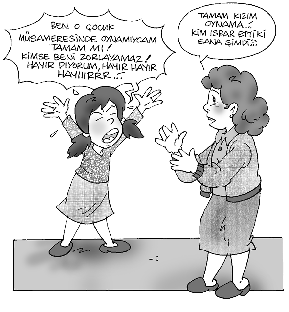
Kızlar ilk âdet kanamasından sonra bir süre düzensiz olarak kanama olurlar, bu aylar boyunca üreme yeteneği tam olarak kazanılmamıştır. Buna “ergen kısırlığı” denmektedir. İlk ay hâlinin genç kızlar için çok önemli, unutulmayacak bir değişiklik olduğu belirtilmektedir (Çok, 1988: 192).
Erkeklerdeki Esas Cinsel Gelişmeler: Erkeklerin üreme organlarındaki değişiklik ortalama olarak 13-14 yaşlarında başlar. Bu dönemde erkek üreme organı ve erbezleri (testisler) büyür, erkek üreme hücresi (sperm) üretmeye başlar.
İlave Cinsel Gelişmeler
Beden Yapısındaki Gelişmeler: Kız ve erkek çocukların beden yapısındaki gelişmeleri ayrı ayrı incelemek gerekir. Kızlarda omuzlar yuvarlaklaşır, göğüs ve kalçalarda deri altına toplanan yağ miktarı artar, göğüs ve kalçalar büyür, göğüs uçları olgunlaşır. Meme gelişmesinin başlamasından ilk âdet kanamasına kadar geçen zaman 2.6 yıl olarak bildirilmektedir (Neyzi ve Günöz, 1989: 113). Kemik büyümesinin ve kemik yaşının buluğdaki belirtilerle ilişkileri vardır. Kemik yaşı kızlarda 11, erkeklerde 12 olduktan sonra buluğ belirtileri başlamaktadır (Günöz, 1986: 26).
Ergenlik döneminde olan erkek çocuklarda -kızlardan farklı olarak- kol ve bacak adalelerinde bir gelişme görülür. Göğüs kafesi ve omuzlar genişler, vücut ve yüz erkeksi bir görünüm alır.
Seslerin Kalınlaşması: Ergende ses çocukluktakinin aksine kalınlaşmaya başlar. Bu dönemde ergen ses tonunu ayarlayamaz, önceleri sesi çatallaşır. Daha sonra ses telleri gelişmesini tamamlar, ergenin ses tonu da olgunlaşır.
Yüzdeki Sivilcelerin Artması: Derideki yağbezlerinin fazla çalışması sonucu, salgılanan yağlar bez kanallarını tıkar ve yüzde siyah noktalar (akneler) oluşturur. Yağ birikimi şişer ve ergenlik sivilcelerini meydana getirir. Aknelerin bu dönemde görülmesi normaldir. Sıkılmaması, sık sık elle oynanmaması, yüzün temiz tutulması gerekir.
Yüzde Bıyık ve Sakalın Çıkması: Ergenlik döneminde yüzde meydana gelen belirgin değişiklik de erkek çocukta bıyık ve sakalların çıkmasıdır. Önce bıyıklar belirgin hâle gelir, sonra şakak kemikleri altında sakallar görülmeye başlar. Sakal ve bıyıkların çıkmasında, gençler arasında bireysel farklara bağlı olarak değişikliklere rastlanır. Aynı yaştaki iki kişinin sakal ve bıyık büyüme hızı farklı olabilir. Bu durum, boyca ve bedence büyümede olduğu gibi, soyaçekime, salgı bezlerinin salgıladığı hormonların miktarına ve beslenmeye bağlıdır.
Vücutta Kıllanma: Ergenlik döneminin başlangıcındaki değişikliklerden biri de, hipofiz bezinin salgıları ile başlayan koltukaltı ve üreme organları bölgesindeki kıllanmadır.
Erkeklerde kıllanma ergenliğin sonlarına doğru göğse, bacak ve kollara yayılır.
Ter Bezlerinin Çalışmasının Artması: Bu dönemde koltuk altı ile kasıklarda ve vücudun diğer yerlerinde, ter bezleri çocukluk döneminden daha fazla çalışır. Sık terleme sonucu ortaya çıkan kirliliği önlemek için vücut temizliğine dikkat etmek, en az haftada bir kere su ve sabunla temizlenmek, koltukaltı ve üreme organlarındaki tüyleri, ter ve kir tutacağı için, uzamadan almak, ergenlik sağlığı için gereklidir.
Vücut Kokusunun Belirginleşmesi: Cinsel olgunlukla beraber, vücutta herkese has bir koku belirginleşir. Bu vücut kokusunun cinsel çekicilikle bir ilişkisi vardır.
Gırtlakta Kıkırdaklaşma: Hipofiz hormonunun etkisiyle, ergenlik döneminin başlangıcında, erkek çocuklarda gırtlağın çene altına rastlayan bölgesinde bir kıkırdaklaşma görülür. Halk arasında “âdem elması” denen bu boğum büyüyerek sertleşir.
Göğüslerde Düğümcüklenme: Erkek ergenlerde genellikle 14-16 yaşları arasında rastlanılan, göğüslerin her ikisinde veya birinde görülen ağrılı büyüme ve sertleşmelerdir. Tıp dilinde buna jinekomasti denilir. Hormon kaynaklıdır. 6 ay ile 3 yıl arasında iyileşme görülür.
Ergenlik Döneminde Görülen Cinsel Rüyalar: Özellikle erkek ergenler, artan cinsel içtepilerin sonucu cinsel kaynaklı rüyalar görürler. Bu rüya esnasında üretilen fazla spermler boşalma sonucu vücudun dışına atılır. Halk dilinde “rüyalanma”, eski dilde “ihtilâm olma” denilen bu olay, sebebini bilmeyen ergenler için ürkütücüdür, çeşitli tedirginlikler yaratabilir.
2. Ergen Duygularının Genel Özellikleri
Ergenlik dönemindeki duygusal tepkilerde genel ortak özellikler vardır. Bunun yanında ergen, her insan gibi çeşitli yaşlarda ve farklı durumlarda değişik duygular hissedebilir. Değişen yaş, çevresel koşullar ve uyaranların değişmesi ile hoşlanma ve hoşlanmama duyguları ve ergenin duygularını ifade biçimi değişir.
Çocukluk dönemi ile ergenlik dönemi arasında duygusal yönden en belirgin fark, çocuklar öfke, kızgınlık ve sevinç gibi duygularını daha açık davranışlarla ve anında ifade eder, buna karşılık ergenlikte bu duygular gizlenip maskelenir. Ergenlikte genel olarak kızların erkeklerden daha önce duygusal olgunluğa ulaştıkları söylenebilir. Aynı yaşta iki ergenden kız olan, erkeğe göre muhtemelen daha heyecan dengesine sahip ve duygularını kontrol etme bakımından daha olgundur.
Ergenliğin başlarındaki büyümenin hızlı oluşu ve biyolojik-cinsel değişmeye eşlik eden hormonal salgılar, buluğda ve onu izleyen yıllarda ergenin hem duygularında, hem de davranış ve tutumlarında belirgin farklara sebep olur (Hurlock, 1987: 120-123). Bunlar aşağıdaki gibi sıralanabilir:
Duyguların Yoğunluğunda Artış: Buluğdan (erinlikten) başlayarak ergenin duygularının yoğunluğunda artma olur. Üzüntü, sevinç, öfke, korku gibi duygularını ifade ederken bu yoğunluk göze çarpar. Artan duygululuk ve coşku hâli ergende duygularını dışa vurma ve ifade etme ihtiyacını doğurur. Olumsuz duygular el, kol hareketleri, yüz ifadesi ve bağırma gibi sözlü ve sözsüz davranışlarla dışa vurulurken, heyecan, coşku ve karşı cinse yönelik duygular, şiir veya öykü yazma, hatıra defteri tutma aracılığı ile kâğıda yansıtılır.
Duygularda İstikrarsızlık: Ergenin duygusal tepkileri düzenlilik göstermez. Hem duygusal durumlarının değişim hızı çabuktur hem de duygularında istikrarsızlık vardır. Ergenin aynı olaya bir gün ara ile gösterdiği tepki değişik olabilir. Ayrıca neşeli ve mutlu bir durumda iken, kısa süre sonra duygusal durumu tamamen farklılaşabilir. Çocukluktaki gibi olmasa da duygusal durumu çabuk değişir. Ergenlerin duygularındaki değişmelerin hızında ve düzensizliğinde bireysel farkların etkisi hatırlanmalıdır.
Aşık Olma: Karşı cinse yönelik ilgiler, buluğ öncesinden başlar. Ergenlikteki cinsel içerikli beğenme ve beğenilme arzusu bireye heyecan veren bir duygudur. Cinsler arasındaki yakınlaşma eğilimi, ergenliğin başlarında daha çok grupta bir arada olma isteği taşırken sonraları karşı cinsten belirli bireylere yönelmiş romantik duygular ortaya çıkar. Saf bir sevgi taşıyan gençlik aşklarında, duygular bazen karşı tarafa iletilmeden kalır. Ergen, çocuklukta yaşadığı her iki cinse yönelik sosyal ilişkilerin yoğunluğuna ve kız-erkek ilişkisinin aile ve kültürel çevre tarafından karşılanışına bağlı olarak karşı cinsle kuracağı ilişki biçimini belirler.
Mahcubiyet ve Çekingenlik: Buluğ öncesinden (önerinlikten) başlayan ve buluğda da devam eden, çıplak görünmekten utanma ve mahcup olma, ergenlerde oldukça yaygın bir duygu durumudur. Âdeta vücutlarını saklamak istemektedirler. Bunun, organlardaki büyümenin farklı zaman ve hızlarda olmasından kaynaklanan orantısız vücut görünümünü saklamak için yapıldığı veya ergenlerin ana ilgi merkezleri olan kendi vücutlarını başka meraklı gözlerden gizleme amacı taşıdığı düşünülebilir. Anne-babası tarafından baskıcı bir şekilde yetiştirilmiş çocuklarda çekingenlik ve mahcubiyet, kalıcı bir özellik olarak ergenlikte de devam eder (Koptagel-İlâl, 1991: 97).
Çocukluk dönemi ile ergenlik dönemi arasında duygusal yönden en belirgin fark, çocuklar, öfke, kızgınlık ve sevinç gibi duygularını daha açık davranışlarla ve anında ifade eder, buna karşılık ergenlikte bu duygular gizlenip maskelenir. Genel olarak ergenlikte, kızların erkeklerden daha önce duygusal olgunluğa ulaştıkları söylenebilir. Aynı yaşta iki ergenden kız olan, erkeğe göre muhtemelen daha heyecan dengesine sahip ve duygularını kontrol etme bakımından daha olgundur.
Aşırı Hayal Kurma: Biyolojik-cinsel gelişme, “duygulu-luk”taki artış ve zihinsel gelişme, ergenlerin akıllarından geçirdiklerinin yoğunluğunu ve niteliğini de değiştirir. Ergen hayal kurma yolu ile arzularını düşüncelerine yansıtır. Hayal konusu geleceğe yönelik tasarılar olabileceği gibi, gerçekleşmesini istediği herhangi bir isteği de olabilir. Hayalin içeriği genellikle karşı cinse yönelik düşüncelerdir. Hayal etme, yaratıcı düşünceyi besleyen en önemli itici güçtür. Bu anlamda yararlıdır. Ancak gerçekleştirilmemiş istekler sanki olmuş gibi hayal ediliyorsa, o zaman ergenler için bir sığınma ve telafi etme aracı hâline getirilmiş demektir. Günlük hayatın zorlukları ve başarısızlıklar karşısında kalan genç kendisini zorluklarla baş etmiş başarılı birisi gibi hayal ederek gerçeklerden uzaklaşabilir. Ergenlikteki yoğunluğu bu eylemin “gündüz rüyası” olarak adlandırılmasına neden olmuştur. Hayaller o kadar artabilir ki, ergen sınıfta ders dinlerken, yolda yürürken veya başkası ile konuşuyorken aslında hayal kuruyor olabilir.
Tedirgin ve Huzursuz Olma: Bu duygu, ergenin karşı karşıya kaldığı stres uyaranlarının etkisine göre ve uyaranları algılayış biçimine göre değişmektedir. Biyolojik-cinsel ve bedensel gelişmenin getirdiği yeni duruma alışma çabaları buna neden olabileceği gibi, akranları ve yetişkinlerle olan sosyal ilişkilerdeki aksamalar veya bir isteğinin engellenmesi de huzursuzluk doğurabilir.
Yalnız Kalma İsteği: Buluğdaki bir kız veya erkek zaman zaman başkalarından uzaklaşmak, kendisi ile baş başa kalmak istiyor gibidir. Anne-babanın ve arkadaşların beraber olma isteğini reddedip içe dönebilir. Âdeta vücudunda olan bitenlerin bir muhasebesini yapmak, onları gözden geçirmek ve yeni duygularına alışmak istemektedir.
Çalışmaya Karşı İsteksizlik: Hızlı büyümenin olduğu dönemde ergenin bir miktar durgun ve atıl olduğu, âdeta hareket etmeye üşendiği zamanlar vardır. Çalışırken ve oyun oynarken yorulur ve çalışmaya karşı daha az isteklidir. Vücut enerjisi âdeta büyümeye harcanıyor gibidir (Hurlock, 1987:120). Okuyan gençlerin bir kısmında 7. ve 9. sınıflarda ders başarısının düşmesi biraz da buna bağlanabilir.
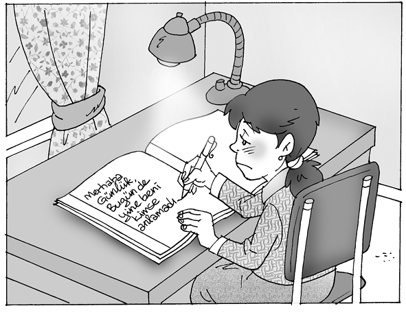
Çabuk Heyecanlanma: Ergen yeni bir durumla karşılaştığında, bu kendisi için alışık olmadığı bir durumsa heyecanlanıp korkabilir. Heyecan dengesi tam oluşmadığı için duyguların kontrolü zordur. Çoğu ergen, heyecan verici durumlar karşısında kolayca kızarabilir. Kızarma, ergende korku yaratan istenmedik bir durumdur. Sadece bu korku tek başına ergeni heyecanlandırıp, kaygısını artırabilir. Ergen bu durumda kendisinin başkaları tarafından aciz, güvensiz ve korkak gibi algılanacağını düşünür ve bu izlenimi bırakmaktan dolayı üzüntü duyar. Heyecanların kontrolü, öğrenme ile kazanılır veya olgunlaşmadıkça belirli durumlar karşısında gösterilen duygusal tepkilerde dengelilik artar.
3. Ergenlikte Sosyalleşme ve Ahlak Gelişimi
Çocuğun doğumundan itibaren büyüdükçe birçok sosyal ve psikolojik ihtiyaçları ortaya çıkar. Türünden olanlarla bir arada olma ihtiyacı veya dürtüsü en alt seviyeli canlılarda bile görülür. İnsanlar da diğer insanlarla bir arada yaşamak isterler ve çevreleri ile uyum içinde olma ihtiyacındadırlar. Sosyal gelişme, kişinin içinde yaşadığı toplum tarafından kabul edilebilir biçimde davranmayı öğrenme sürecidir. Bebek kendinin merkez olduğu anlayıştan kurtulup, uyumlu bir yetişkin olmaya doğru bir gelişme gösterir (Staton, 1962: 49). Toplumsallaşma, bebeğin başka insanlara tepkiler vermesi ile başlar ve ömür boyu devam eder (Varış, 1963: 57).
Hızlı büyümenin olduğu dönemde, ergenin bir miktar durgun ve atıl olduğu, âdeta hareket etmeye üşendiği zamanlar vardır. Çalışırken ve oyun oynarken yorulur ve çalışmaya karşı daha az isteklidir. Vücut enerjisi büyümeye harcanıyor gibidir. Okuyan gençlerin bir kısmında 7. ve 9. sınıflarda ders başarısının düşmesi biraz da buna bağlanabilir.
Anne-baba tarafından gösterilen sevgi, dengeli bakım ve beslenme, çocuğun temel güven duygusunu pekiştirir. Bu yıllarda anne ve baba ile ilişkilerinde sıcak ve hoş izlenimleri varsa, başkalarına karşı da benzer biçimde davranacaktır. Kısaca çocuk, aile içinde kendine yapılan sosyal davranışları yansıtır. Çocuğun aile dışındaki ilişkileri de olumsuzsa, bu ilişkilerinde reddedilmiş, itilmişse, bu tür sosyal ilişkileri tekrarlamak istemeyecektir. Olumlu sosyal ilişkiler tekrar edilir. Mutlu sosyal deneyimler, çocuğun sosyal deneyimlerini tekrarlamaya teşvik eder.
Çocuğun sosyal gelişiminde düzenli bir süreç gözlenmeyebilir. Hızlı bir gelişmenin ardından, sosyal bakımdan bir duraklama görülebilir. Bunun anne-baba ve öğretmen tarafından bilinmesi ve cesaret kırıcı olarak algılanmaması gerekir.
Çocuğun tek çocuk, ortanca veya büyük çocuk olup olmadığı, kardeş sayısı, cinsiyeti, ailenin büyüklüğü, ailenin katıldığı sosyal deneyimlerin kalitesi, eve misafir gelişi, misafir ağırlama biçimi, ebeveynin evdeki çocuklardan misafirlere karşı takınmasını istediği tavır, ailenin sosyo-ekonomik ve kültürel seviyesi hep çocuğun topluma uymasını ve sosyalleşmesini etkileyen belli başlı faktörlerdir. Aralarında çok yaş farkı olan kardeşi olma, kardeşlerinin tümünün aynı cinsten olması, sosyalleşmeyi güçleştirebilir. Kardeşlerin ve ev halkının hep aynı cinsiyetten olması, karşı cinsle ilişki kurmayı güç hâle getirebilir.
Anne-baba tarafından gösterilen sevgi, dengeli bakım ve beslenme, çocuğun temel güven duygusunu pekiştirir. Bu yıllarda anne ve baba ile ilişkilerinde sıcak ve hoş izlenimleri varsa, başkalarına karşı da benzer biçimde davranacaktır. Kısaca çocuk, aile içinde kendine yapılan sosyal davranışları yansıtır. Çocuğun aile dışındaki ilişkileri de olumsuzsa, bu ilişkilerinde reddedilmiş, itilmişse, bu tür sosyal ilişkileri tekrarlamak istemeyecektir. Olumlu sosyal ilişkiler tekrar edilir. Mutlu sosyal deneyimler, çocuğun sosyal deneyimlerini tekrarlamaya teşvik eder.
Çocuklar, aile içinde anne-babalarından tek yönlü olarak etkilenmezler. Çocuk ve ergenler, anne-babaları tarafından sosyalleştirilirken, anne-babalar da onlardan etkilenir. Bu “karşılıklı sosyalleşme” süreci, çocuk ile anne-babanın etkileşimi devam ettikçe yaşanır (Santrock, 1993: 187-188). Ailede anne-babalık rolleri, evliliğe ait tutumlar ve ergen tavırları, aile içi etkileşim yolu ile biçimlenirler.
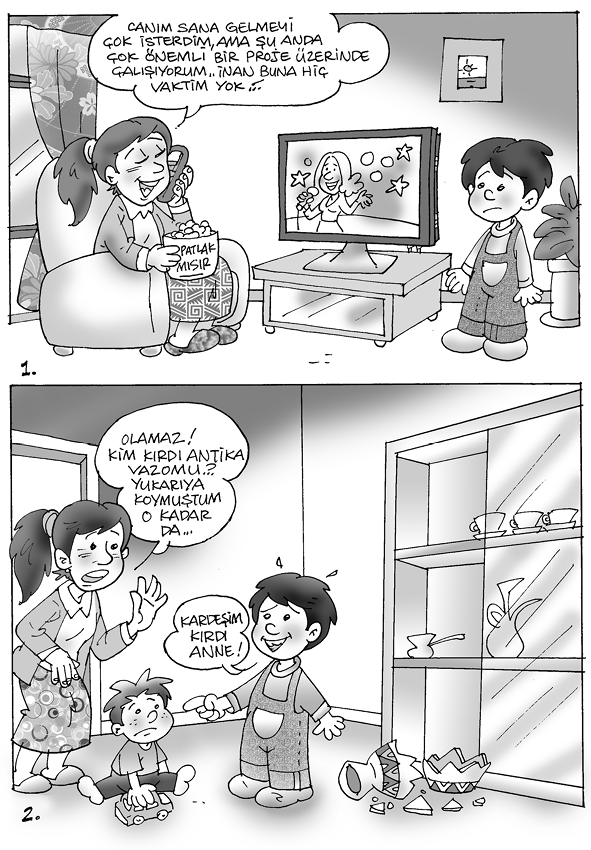
Sosyal gelişme ömür boyu devam eden bir süreç olduğuna göre, insan büyüdükçe, yeni çevrelere girdikçe ve statüsü değiştikçe farklı tipte ilişkiler geliştirir. Ancak ilk çocuk-anne-baba etkileşimi, çocuğun hayat boyu başkaları ile ilişki kurma biçimini belirleyen temel yoldur. Özellikle otoriteyi temsil eden birisi ile bir sosyal ilişki kurduğumuzda, çoğunlukla çocukken anne-baba ile kurduğumuz sosyal ilişkiyi model alırız.
Anne-babanın çocuk yetiştirme tutumu, çocuğun sosyalleşmesini etkileyen diğer bir değişkendir. Anne-babanın demokratik ve eşitlikçi davranması, baskıcı ve otoriter olması veya aşırı koruyucu davranması çocuklarının farklı sosyal tavırlar geliştirmelerine neden olur. Demokratik ve eşitlikçi bir ortamda yetişen çocuklar, daha kendine güvenli ve sosyal olmaktadır. Üzerine fazla düşülen, çok ilgilenilen çocuklar edilgen, kas gücü bakımından daha eksik ve sosyal ilişkilerinde daha geri olabilir. İstanbul’da lise ikinci sınıftaki 700 öğrenci üzerinde yapılan ve algıladıkları anne-baba tutumları ile uyum düzeyleri arasındaki ilişkiyi belirlemeyi amaçlayan bir araştırmada, olumlu anne-baba tutumu algılayanların uyum düzeyleri ile olumsuz anne-baba tutumu algılayanların uyum düzeyleri arasında ters yönde bir ilişki bulunmuştur. Olumlu anne-baba tutumu algılayanlar daha yüksek bir sosyal uyuma sahiptir (Akbağ, 1994:136). Bu araştırmada erkeklerin kişisel ve genel uyum düzeyleri, kızlardan daha yüksek olarak bulunmuştur.
Sosyal olma, hayatın ilk yıllarından itibaren öğrenilebilen bir özellik olmakla birlikte, dışadönük bir kişilik yapısına sahip olanların, sosyal bakımdan daha uyumlu olduğu söylenebilir. 221 üniversite öğrencisi üzerinde Ankara’da yürütülen araştırmada, sosyal dışadönük öğrencilerin, genel, sosyal ve kişisel uyum düzeylerinin sosyal içedönük olanlara göre daha yüksek olduğu bulunmuştur (Soyer, 1992). Bu araştırma, kişilik özellikleri ile sosyal uyum arasındaki ilişkiyi göstermesi bakımından ilginçtir.
Anne-babanın çocuklara karşı tutumlarının onları etkilediği konusunda bulgular çoktur. Anne-baba davranışları toplumdan topluma, o toplumdaki aileler arasında ve ailenin içinde bulunduğu ekonomik ve kültürel düzeye göre farklılıklar gösterebilir (Mussen, 1973: 50). Bu davranışlar, çocuğun sosyalleşmesini ve topluma uygun şekilde davranıp davranmamasını etkilemektedir (Rosen, 1967:316-321).
4. Ergen ve Önceki Kuşaklar Arasında Çatışma
Kuşaklar veya nesiller arasındaki anlaşmazlık, zamanımıza has değildir. Eski çağlardan bu yana gençlerle anne-babaları arasında anlaşmazlıklar ve çatışmalar çıkmıştır. Bir kuşak veya bir nesil demek, anne-baba ile çocukları arasındaki yaş farkı demektir. Bu da yaklaşık 25 yıllık bir zaman dilimidir.
Ülkemizde, toplumun her kesiminde çok hızlı bir gelişme ve değişmeyi gözlemekteyiz. Bu değişmeyle beraber, toplumumuzda yerleşik değerler eski toparlayıcılıklarını yitirmektedir. TV ve yazılı basının, genel değer yargılarının değişmesindeki rolü çok önemlidir. Bu hızlı değişim, daha çok köy kesiminden büyük şehirlere gelen gençler üzerinde belirgindir. Köy hayatında kişiler arası ilişkinin yakın ve samimi oluşu, ahlaki ve dinî değerlerin daha etkili ve toplayıcı oluşu, buna karşılık daha geniş ve değişik bir yapıya sahip büyük şehirlerde insan ilişkilerinin köydeki kadar sıcak olmaması, hemşehrilik bağının daha zayıf olması, dinî, ahlaki ve toplumsal değer yargılarının köye oranla daha az etkili oluşu, özellikle gençler üzerinde olumsuz etkiler yapmaktadır. Daha önce, aile ve yakın çevre tarafından benimsetilmiş değerlerle, şehirdeki yeni çevrenin değerleri arasında fark vardır ve genç hangi değer hükümlerine ne ölçüde uyacağını veya uymayacağını kestirememektedir. Yetişkin toplumu ile farklı değerlere sahip olma, başlı başına bir uyumsuzluk ve çatışma nedenidir.
Gençlik dönemi bir bakıma, kimlik arama, kendini ispatlama, bağımsızlık kazanma evresidir. Kimliğini kazanma çabası içindeki bu genç, yetişkinden arzu ettiği güveni göremezse huzursuz olur. Aslında anne-baba ve diğer yetişkinler, gençlerin neleri yapıp neleri yapamayacakları konusunda görüş birliğinde değillerdir.
Gençlerin bir kuşak öndeki yetişkin toplumuna girmesini, bağımsız olmasını ve kendine has bir kimlik elde etmesini önleyen önemli bir engel de, onların ekonomik bağımsızlığa sahip olmamasıdır. Kendi hayatını devam ettirmek için gerekli parayı kazanamama, gencin bağımsız bir kişilik geliştirmesine engel olabilir. Eğitim döneminin uzaması, gençlerin bir an önce hayata atılıp sorumluluk almasını ve yetişkin safına geçmesini geciktirdiği için, gençler açısından bir huzursuzluk nedeni olabilir. Öğrenimi boyunca çalışmayan, herhangi bir şey üretmeden anne ve babasının harçlıkları ile geçinmek durumunda kalan öğrenciler, bunun ezikliğini duyarlar. Genellikle ülkemizdeki gencin, anne-babası ve yakın çevresindekilere oranla daha çok okumuş olması, aile içindeki kuşakların farklı kültüre ve anlayışa sahip olmasına, hatta farklı dil kullanmasına yol açtığı için kuşak çatışmasına neden olabilir (Yörükoğlu, 1985: 210).
Zamanımızdaki süratli gelişme ve bilgilenme, nesiller arasındaki zamanı daha da kısaltmıştır. Değişen çevre ve yeni şartlar karşısında yeni davranışlar öğrenme konusunda genç nesiller, bir kuşak öncekilere oranla daha ataktırlar. Bu durumda gençler ve yetişkinler, yaşadıkları ortak çevreye aynı oranda uyum gösteremez.
Lise son sınıfta okuyan gençler üzerinde yaptığımız araştırmada, en çok aşağıdaki konularda anne-babaları ile çatışmaya girdikleri saptanmıştır:
Anne-babası tarafından eleştirilmek
Sağlık durumları ile çok ilgilenilmesi
Evde temizlik konusunda titiz davranılması
Bir konunun çok uzatılması
Aşırı şekilde nasihat edilmesi
Üstlerine çok düşülmesi
Anne-babanın kendisini anlamaması
Akşamları eve geç gelmesine izin verilmemesi
Evde azarlanması
Anne-babasının her şeyini öğrenmek istemesi
Anne-babası tarafından dağınık olduğunun söylenmesi
Okuldaki ders başarısının tenkit edilmesi
Ailesinin ona baskı yapması
Anne-babasının yanında tartışması
Her öğrenilen bilgi, kişide birtakım davranış değişikliklerine neden olmaktadır. Gençler bu tür bilgileri bir önceki kuşaktan daha çabuk ve kolay öğrendiklerinden, bu yeni bilgiler ve dolayısıyla yeni davranışlar öğrenme, kuşaklar arasında farklılaşmaya neden olur. Önceki kuşakların gençlik dönemine karşı duydukları özlem, buna karşılık gençlerin de kendilerinden daha üstün bir durumda bulunan yetişkinlere karşı duydukları özlem, gençler ve yetişkinler arasında bir çatışma yaratabilir (Tezcan, 1981: 39-43). Anne ve babanın baskı yapması, çocuklarına söz hakkı vermemesi, onların bağımsızlık isteklerini artırır. Anne-babanın olumsuz tutumları, gençlerde istenmeyen duygusal birikimlere yol açar.
Lise son sınıfta okuyan gençler üzerinde yaptığımız araştırmada, en çok aşağıdaki konularda anne-babaları ile çatışmaya girdikleri saptanmıştır (Kulaksızoğlu, 1985:194-195):
Anne-babası tarafından eleştirilmek
Sağlık durumları ile çok ilgilenilmesi
Evde temizlik konusunda titiz davranılması
Bir konunun çok uzatılması
Aşırı şekilde nasihat edilmesi
Üstlerine çok düşülmesi
Anne-babanın kendisini anlamaması
Akşamları eve geç gelmesine izin verilmemesi
Evde azarlanması
Anne-babasının her şeyini öğrenmek istemesi
Anne-babası tarafından dağınık olduğunun söylenmesi
Okuldaki ders başarısının tenkit edilmesi
Ailesinin ona baskı yapması
Anne-babasının yanında tartışması
5. Ahlaki Gelişme
Ayrıca alt ekonomik seviyedeki ergenler için “evdeki işlerin zamanında yapılmaması” ve “anne-babasının yeterince bilgili olmamaları” çatışma konusu olmaktadır.
Ahlak, iyi ve doğru davranışlar bütünüdür ve insanların uymakla sorumlu oldukları davranışlar ve kurallardır. Hangi davranışın iyi hangisinin kötü olduğu konusunda kişiden kişiye ve toplumdan topluma değişen yargılar vardır. Herkesin kendine göre bir ahlak anlayışı olduğu gibi, ahlaklı davranış anlayışı, tarihin çeşitli dönemlerinde de değişmiştir. Ahlakla ilgili genel bir anlaşmanın, iyi ve kötü davranışın ne olduğu konusunda herkesin hemfikir olduğu bir temelin olmadığına işaret edilmesine karşılık (Heimsoeth, 1978: 14, 49 - Akarsu, 1970: 1,4), ahlak ilkelerinin değişmeyen mutlak değerler olduğu görüşü de savunulmuştur.
Ahlak ilkeleri, adalet ve eşitlik ile çelişmeyen, adil olan insanların üzerinde ortak olarak birleşebilecekleri, genel, soyut ilkelerdir. Ahlak kuralları, adalet ve eşitliğe dayalı olan kurallardır. İnsanlar arasında ahlaki değerlendirmeler ve ahlaki seviye bakımından farklılıklar bulunmasına rağmen, bütün insanların birleşebilecekleri adalet ilkelerine dayalı ortak değerler de vardır.
Anne-babanın ve öğretmenin, gencin kişilik ve ahlaki gelişimi hakkında bilgi sahibi olması, iki neslin arasındaki çatışmayı azaltacaktır.
Ahlak Eğitimi
Bireyler arasındaki ahlaki gelişim farkı, eğitim yolu ile azaltılabilir, insanlar ahlaki bakımdan bir üst seviyeye geçme konusunda güdülendirilebilirler. Genel geçer ahlaki kurallar ve ilkeler bakımından eğitim almaları, insanların daha üst seviyeli ahlaki değerleri tanımalarına zemin hazırlayacaktır. Bireyin, içinde yetiştiği ve yaşadığı toplumun adalet anlayışı ile ahlak gelişimi arasında ilişki bulunmaktadır. Eşitlikçi ve adil bir çevrede yetişen insanlar, kendi değerler sistemini sorgulayabilir ve bunları eleştirebilirlerse, bunları yeniden yapılandırabilirler ve ahlaki bakımdan gelişmeleri mümkün olabilir (Çileli, 1987:280).
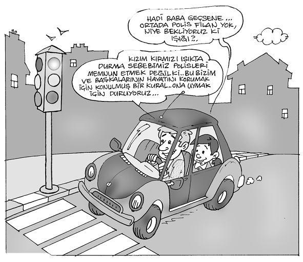
Aynı mesleği yürüten bireylerin meslektaşları arasında ortak bir tutum ve davranış birliği sağlamaya yönelik kurallar koymaları, onların ortak bir mesleki kimlikte buluşmalarını kolaylaştıracağı gibi, meslek mensuplarının davranışlarını da düzenleyecektir. Aynı mesleği yapanların, benzer tutum ve ahlaki yargılar geliştirmeleri ahlak eğitimi de sağlayabilir. Böylelikle bireyler, ahlaki değerler üzerinde düşünerek bunları düzenleyebilir (Kulaksızoğlu, 1995: 185). Eğitimin nihai amacı da ahlaklı insanlar yetiştirmek olmalıdır.
6. Kişiliğin Tanımı ve Oluşması
Kişilik, bireyin sosyal ve psikolojik tepkilerinin tümüne verilen bir isimdir. Aynı zamanda, bir kimsenin kendine göre belirgin bir özelliği olması durumudur. Diğer bir deyişle, bir bireyi diğerinden farklı kılan bütün ayırıcı özellikleri onun kişiliğidir. Başka bir tanımda ise kişilik, bireyin sosyal, ahlaki, zihinsel ve fiziksel özelliklerinin dinamik bir bütünleşmesi olarak açıklanmaktadır (Wallerstein, 1981: 208). Kişilik (şahsiyet), yukarıdaki tanımlardan da anlaşıldığı gibi, insanın tüm özelliklerini içeren, geniş kapsamlı bir kavramdır. Karakter, mizaç (huy), benlik ve kimlik gibi kavramlar da kişilikle ilgili olarak kullanılmaktadır. Karakter (seciye veya meşrep), kişiliğin ahlaki yönünü betimlemek için kullanılır. Huy veya mizaç, kişiliğin duygusal yönünü açıklamaktadır. Benlik, bireyin kendisi ile ilgili algılamalarından ve değerlendirmelerinden oluşur. Kimlik ise zaman zaman benlik ve kişilik yerine de kullanılmaktadır ve “birinin, belirli bir kimse olmasını sağlayan şartların bütünü” olarak ifade edilebilir.
Ergenin kimliği, çocukluktan itibaren yapılan değişik özdeşimlerle yavaş yavaş gelişir. Ergenliğin başlangıcındaki çocukların, kendi kimlikleri hakkında belirgin olmayan bazı imgeleri vardır. Ergenlik, kimlik geliştirmede önemli bir dönemdir ve ergen “ben kimim?”, “hangi hareket doğru?”, “nasıl davranmalıyım?” sorularına cevap arar. Ergenlerin değer yargıları ve ahlaki standartları, anne-babasının, akranlarının ve etraflarındaki yetişkinlerin değer yargıları ve ahlaki standartlarından etkilenir. Ergenler, çevrelerindeki insanların benzer görüşlerinin bir bileşimini yapmaya çalışırlar. Eğer ergenin dünya görüşü ve değerleri, akranlarından ve etrafındaki diğer önemli kişilerinkinden bariz biçimde farklılaşıyorsa, o zaman ergen bir rol ve kimlik karışıklığı ile karşı karşıya kalmaktadır. Kimlik arayışı çok farklı biçimlerde çözülebilir. Bazı gençler, bir deneyim ve arayış dönemi geçirdikten sonra hayatta kendilerine bir hedef tayin ederler ve ona doğru ilerlerler. Bazı ergenler ise kimlik karışıklığını hiç yaşamazlar. Genellikle anne-babalarının değer yargılarını olduğu gibi kabul ederler. Anne-babanın görüşlerine uygun yetişkin rolleri benimseyenlerin kimlikleri daha erken belirginleşmektedir. Ailenin veya toplumun değer yargılarını benimsemek istemeyenler, uzun bir kimlik karışıklığı döneminden geçerler. Bu gençler, kendilerini bulmakta güçlük çekerler (Atkinson ve Diğerleri, 1990:106).
Kimlik karışıklığı Erikson’un kullandığı bir deyimdir. Erikson’a göre insan hayatında kişilik gelişiminde ergenlik dönemi çok önemlidir. Ergenlikteki en önemli değişim, “kimlik karışıklığı” olarak adlandırdığı değişimdir. Çocukluğunda sağlıklı psikolojik ve cinsel özdeşimler kuramamış bir kısım ergen, yeni kimliğini oluşturma sürecinde kendisinin gerçek kimliğinin ne olduğu konusunda karmaşaya düşebilir. Başkalarının gözündeki kendisi ile kendi gözündeki kendisi arasındaki bağdaşmazlık, onda bir kimlik krizine veya karmaşasına sebep olabilir. Çocukluğunda anne-babası ile olumlu özdeşimler kurmuş olanların, ergenlikte ve yetişkinlikteki kimlik oluşturma süreçleri sağlıklı geçecektir. Ergenlerin çocukluktan yetişkinliğe geçiş sürecinde, kendisi ve gerçek kimliği konusundaki kaygı ve arayışları, onda ciddi sarsıntılara ve zaman zaman kendi üzerindeki denetimini kaybetmesine yol açabilir. Erikson’a göre ergenler, yeni bir kimlik oluşturma mücadelesinde başkalarının gözündeki kendisi ile, kendi gözündeki kendisini karşılaştırırlar. Önceden edindikleri rol ve becerilerini yeni durumla nasıl bütünleştirecekleri, onlar için sorundur. Ergen, çocukluktaki özdeşimlerini ve cinsel yönelimlerini, doğuştan getirilen yetenekler ve toplum tarafından sunulan olanaklarla bütünleştirir (Erikson, 1984: 27). Bu evrenin tehlikesi kimlik krizi veya kimlik karışıklığı olarak adlandırılmıştır.
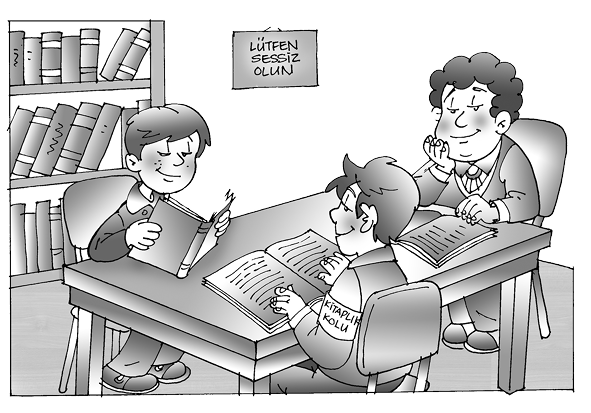
Ergen, özellikle cinsel kimliğinin psikolojik olarak kabulü sürecinde kendi cinsel kimliğine yönelik kuşkular taşıyorsa, bu onda karmaşaya neden olabilir. İlk çocukluk yıllarında olumlu cinsel özdeşimler yapamamış ve cinsel kimliği konusunda şüpheleri olan gençlerin, ergenlikte sahip oldukları biyolojik kimliği benimsemeleri ve buna uygun cinsel rolleri oynamalarında çatışmalar yaşamaları muhtemeldir.
Erikson’a göre çocukluk ve ergenliğin olumlu geçmesi, yetişkinliğe de yansıyacak ve bireyin sağlıklı bir yetişkin olarak yaşaması mümkün olacaktır.
Kimliğimizin oluşması, çok sayıda değişkenin etkisine bağlı olarak gerçekleşir. Doğuştan getirdiğimiz genetik ve biyolojik özelliklerimizin dışındaki çevresel etkenleri üç alt başlıkta inceleyebiliriz. Böylelikle kişiliğimizi oluşturan özellikler şunlardır (Mussen, 1973: 47):
Genetik ve biyolojik etkenler,
Bireyin içinde yaşadığı kültürel etkenler,
Bireyin içinde bulunduğu sosyal sınıfa bağlı etkenler,
İçinde yaşanılan psikolojik ortama bağlı etkenler.
Sonuç olarak kişiliğimiz yukarıdaki özelliklerden etkilenir ve bu özelliklerin her biri diğeri kadar önemlidir.